Managing systems using the RHEL 8 web console
A guide to using the web console for managing systems in Red Hat Enterprise Linux 8
Abstract
Providing feedback on Red Hat documentation
We appreciate your input on our documentation. Please let us know how we could make it better. To do so:
For simple comments on specific passages:
- Make sure you are viewing the documentation in the Multi-page HTML format. In addition, ensure you see the Feedback button in the upper right corner of the document.
- Use your mouse cursor to highlight the part of text that you want to comment on.
- Click the Add Feedback pop-up that appears below the highlighted text.
- Follow the displayed instructions.
For submitting more complex feedback, create a Bugzilla ticket:
- Go to the Bugzilla website.
- As the Component, use Documentation.
- Fill in the Description field with your suggestion for improvement. Include a link to the relevant part(s) of documentation.
- Click Submit Bug.
Chapter 1. Getting started using the RHEL web console
The following sections aim to help you install the web console in Red Hat Enterprise Linux 8 and open the web console in your browser. You will also learn how to add remote hosts and monitor them in the RHEL 8 web console.
Prerequisites
- Installed Red Hat Enterprise Linux 8.
- Enabled networking.
Registered system with appropriate subscription attached.
To obtain subscription, see link: Managing subscriptions in the web console.
1.1. What is the RHEL web console
The RHEL web console is a Red Hat Enterprise Linux 8 web-based interface designed for managing and monitoring your local system, as well as Linux servers located in your network environment.
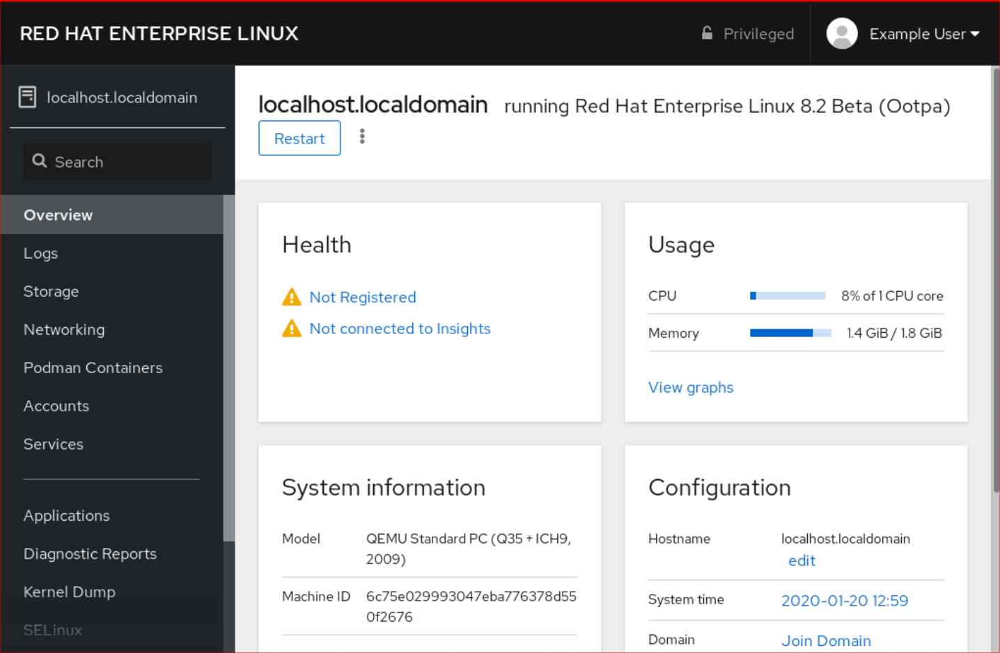
The RHEL web console enables you a wide range of administration tasks, including:
- Managing services
- Managing user accounts
- Managing and monitoring system services
- Configuring network interfaces and firewall
- Reviewing system logs
- Managing virtual machines
- Creating diagnostic reports
- Setting kernel dump configuration
- Configuring SELinux
- Updating software
- Managing system subscriptions
The RHEL web console uses the same system APIs as you would in a terminal, and actions performed in a terminal are immediately reflected in the RHEL web console.
You can monitor the logs of systems in the network environment, as well as their performance, displayed as graphs. In addition, you can change the settings directly in the web console or through the terminal.
1.2. Installing the web console
Red Hat Enterprise Linux 8 includes the RHEL 8 web console installed by default in many installation variants. If this is not the case on your system, install the Cockpit package and set up the cockpit.socket service to enable the RHEL 8 web console.
Procedure
Install the
cockpitpackage:$ sudo yum install cockpit
Optionally, enable and start the cockpit.socket service, which runs a web server. This step is necessary, if you need to connect to the system through the web console.
$ sudo systemctl enable --now cockpit.socket
To verify the previous installation and configuration, you can open the web console.
If you are using a custom firewall profile, you need to add the cockpit service to firewalld to open port 9090 in the firewall:
$ sudo firewall-cmd --add-service=cockpit --permanent $ firewall-cmd --reload
1.3. Logging in to the web console
The following describes the first login to the RHEL web console using a system user name and password.
Prerequisites
Use one of the following browsers for opening the web console:
- Mozilla Firefox 52 and later
- Google Chrome 57 and later
- Microsoft Edge 16 and later
System user account credentials
The RHEL web console uses a specific PAM stack located at
/etc/pam.d/cockpit. Authentication with PAM allows you to log in with the user name and password of any local account on the system.
Procedure
Open the web console in your web browser:
-
Locally:
https://localhost:9090 -
Remotely with the server’s hostname:
https://example.com:9090 Remotely with the server’s IP address:
https://192.0.2.2:9090If you use a self-signed certificate, the browser issues a warning. Check the certificate and accept the security exception to proceed with the login.
The console loads a certificate from the
/etc/cockpit/ws-certs.ddirectory and uses the last file with a.certextension in alphabetical order. To avoid having to grant security exceptions, install a certificate signed by a certificate authority (CA).
-
Locally:
In the login screen, enter your system user name and password.
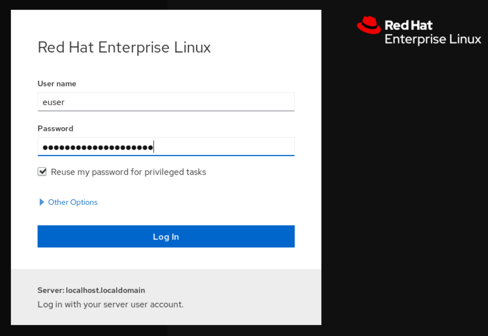
Optionally, click the Reuse my password for privileged tasks option.
If the user account you are using to log in has sudo privileges, this makes it possible to perform privileged tasks in the web console, such as installing software or configuring SELinux.
- Click Log In.
After successful authentication, the RHEL web console interface opens.
1.4. Connecting to the web console from a remote machine
It is possible to connect to your web console interface from any client operating system and also from mobile phones or tablets. The following procedure shows how to do it.
Prerequisites
Device with a supported internet browser, such as:
- Mozilla Firefox 52 and later
- Google Chrome 57 and later
- Microsoft Edge 16 and later
- RHEL 8 server you want to access with an installed and accessible web console. For more information about the installation of the web console see Installing the web console.
Procedure
- Open your web browser.
Type the remote server’s address in one of the following formats:
-
With the server’s host name:
server.hostname.example.com:port_number -
With the server’s IP address:
server.IP_address:port_number
-
With the server’s host name:
- After the login interface opens, log in with your RHEL machine credentials.
Chapter 2. Red Hat web console add-ons
2.1. Installing add-ons
The cockpit package is a part of Red Hat Enterprise Linux 8 by default. To be able to use add-on applications you must install them separately.
Prerequisites
-
Installed and enabled
cockpitpackage. If you need to install web console first, check the installation section.
Procedure
Install an add-on.
# yum install <add-on>
2.2. Add-ons for the RHEL 8 web console
The following table lists available add-on applications for the RHEL 8 web console.
| Feature name | Package name | Usage |
|---|---|---|
| Composer | cockpit-composer | Building custom OS images |
| Dashboard | cockpit-dashboard | Managing multiple servers in one UI |
| Machines | cockpit-machines | Managing libvirt virtual machines |
| PackageKit | cockpit-packagekit | Software updates and application installation (usually installed by default) |
| PCP | cockpit-pcp | Persistent and more fine-grained performance data (installed on demand from the UI) |
| podman | cockpit-podman | Managing podman containers (available from RHEL 8.1) |
| Session Recording | cockpit-session-recording | Recording and managing user sessions |
Chapter 3. Configuring system settings in the web console
In this chapter, you will learn how to execute basic system settings in the web console and thus be able to:
- Restart or shutdown the system in the web console.
- Change a system host name.
- Join the system to a domain.
- Configure time and time zones.
- Change a performance profile.
3.1. Using the web console to restart the system
The following procedure describes system restart executed in the web console.
Prerequisites
The web console must be installed and accessible.
For details, see Installing the web console.
Procedure
Log in to the RHEL 8 web console.
For details, see Logging in to the web console.
- Click System.
In the Power Options drop down list, select Restart.

- If there are users logged into the system, write a reason for the restart in the Restart dialog box.
In the Delay drop down list, select a time interval.

- Click Restart.
The system will be restarted according to your selection.
3.2. Using the web console to shutdown the system
The following procedure describes system shutdown executed in the web console.
Prerequisites
The web console must be installed and accessible.
For details, see Installing the web console.
Procedure
Log in to the RHEL 8 web console.
For details, see Logging in to the web console.
- Click System.
In the Power Options drop down list, select Shut Down.
- If there are users logged into the system, write a reason for the shutdown in the Shut Down dialog box.
- In the Delay drop down list, select a time interval.
- Click Shut Down.
The system will be turned off according to your selection.
3.3. Using the web console for setting a host name
The host name identifies the system. By default, the host name is set to localhost, but you can change it.
Host names consists of two parts:
- Host name — It is a unique name which identifies a system.
-
Domain — If you want to use the machine in the network and use names instead of just IP addresses, you need to add the domain as a suffix behind the host name. For example:
mymachine.example.com
You can configure also a pretty host name in the RHEL web console. The pretty host name allows you to enter a host name with capital letters, spaces, and so on. The pretty host name displays in the web console, but it does not have to correspond with the host name.
Example:
Pretty host name: My Machine
Host name: mymachine
Real host name (Fully qualified domain name): mymachine.idm.company.com
Host names are stored in the /etc/hostname file, however, you can set or change the host name in the web console.
Prerequisites
The web console must be installed and accessible.
For details, see Installing the web console.
Procedure
Log in to the RHEL 8 web console.
For details, see Logging in to the web console.
- Click System.
Click the current host name.
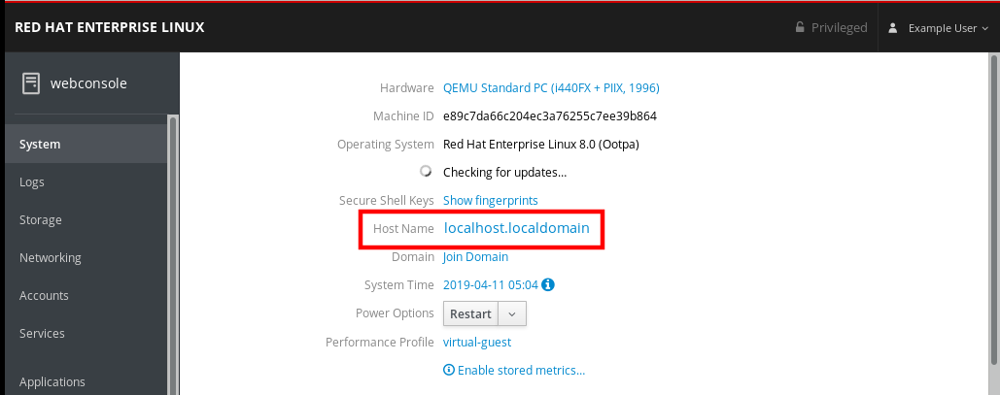
- In the Change Host Name dialog box, enter the host name in the Pretty Host Name field.
In the Real Host Name field, the pretty name will be compounded with a domain name.
You can change the host name manually if it does not correspond with the pretty host name.
Click Change.
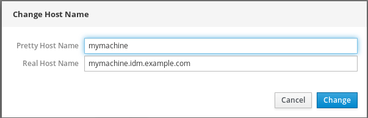
To verify that the host name is configured properly, try to log out from the web console and add to the browser the address with the new host name.
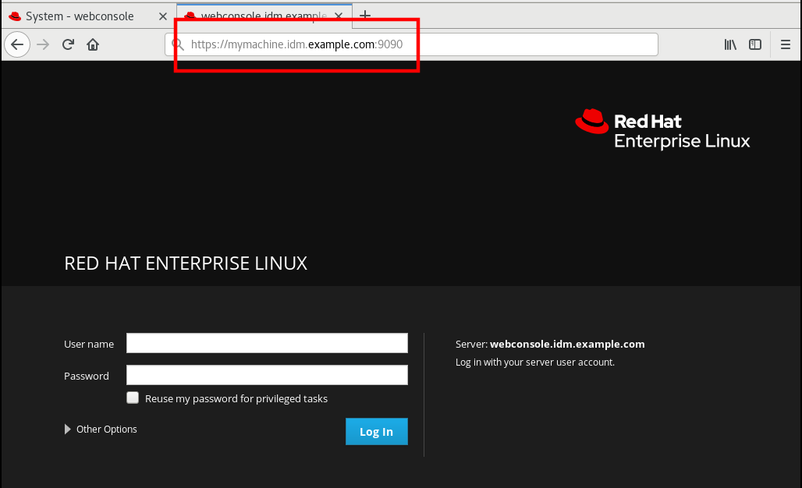
3.4. Joining the RHEL 8 system to the IdM domain using the web console
The following procedure describes joining the RHEL 8 system to the IdM domain.
Prerequisites
- IdM domain running and reachable from the client you want to join.
- IdM domain administrator credentials.
Procedure
Log in to the RHEL web console.
For details, see Logging in to the web console.
- Open the System tab.
Click Join Domain.
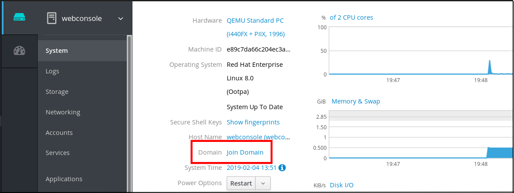
- In the Join a Domain dialog box, enter the host name of the IdM server in the Domain Address field.
In the Authentication drop down list, select if you want to use password or one time password for authentication.
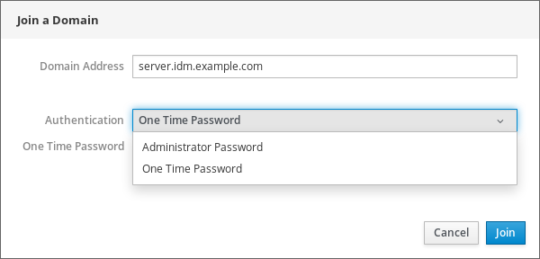
- In the Domain Administrator Name field, enter the user name of the IdM administration account.
- In the password field, add the password or one time password according to what you selected in the Authentication drop down list above.
Click Join.

If the RHEL 8 web console did not display an error, the system has been joined to the IdM domain and you can see the domain name in the System screen.
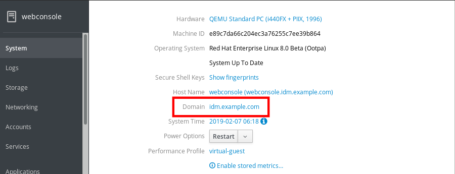
If you click to the joined domain in the System screen, the system will display a warning dialog with the information about leaving the domain. If you click Leave, the system will leave the domain.
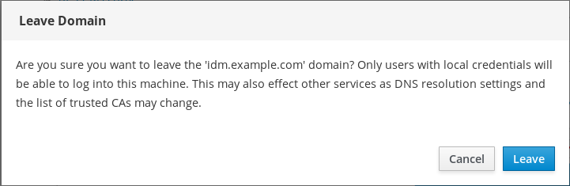
3.5. Using the web console for configuring time settings
This section shows you how to set:
- The correct time zone
- Automatic time settings provided by an NTP server.
- A specific NTP server.
Prerequisites
The web console must be installed and accessible.
For details, see Installing the web console.
Procedure
Log in to the RHEL 8 web console.
For details, see Logging in to the web console.
- Click System.
Click the current system time.

- In the Change System Time dialog box, change the time zone if necessary.
In the Set Time drop down menu, select:
- Manually
- Automatically using NTP server — This is a default option. If the time of the system is correct, leave it as it is.
- Automatically using specific NTP servers — Use this option only if you need to synchronize the system with a specific NTP server and add the DNS name or IP address of the server.
Click Change.

The change is now available in the System tab.
3.6. Using the web console for selecting performance profiles
Red Hat Enterprise Linux 8 includes performance profiles optimizing:
- Systems using Desktop
- Latency performance
- Network performance
- Low power consumption
- Virtual machines
The following procedure describes setting up performance profiles in the web console.
The RHEL 8 web console configures the tuned service.
For details about the tuned service, see Monitoring and managing system status and performance.
Prerequisites
The web console must be installed and accessible.
For details, see Installing the web console.
Procedure
Log in to the RHEL 8 web console.
For details, see Logging in to the web console.
- Click System.
In the Performance Profile field, click the current performance profile.

- In the Change Performance Profile dialog box, change the profile if necessary.
Click Change.

The change is now available in the System tab.
3.7. Disabling Simultaneous Multi Threading to prevent CPU security issues
This feature is available in RHEL 8.0.1 and RHEL 8.1.0 Beta.
This section helps you to disable SMT (Simultaneous Multi Threading) in case of attacks that misuse CPU Simultaneous Multi Threading.
Disabling SMT can help with security vulnerabilities on newer types of Intel processors, such as:
- L1TF
- MDS
This configuration requires system restart.
This configuration can slow down the system performance.
Prerequisites
The web console must be installed and accessible.
For details, see Installing the web console.
Procedure
Log in to the RHEL 8 web console.
For details, see Logging in to the web console.
- Click System.
In the Hardware item, click the hardware information.

In the CPU Security item, click Mitigations.
If this link is not present, it means that your system does not support SMT, and therefore is not vulnerable.
In the CPU Security Toggles, switch on the Disable simultaneous multithreading (nosmt) option.

- Click on the Save and reboot button.
After the system restart, the CPU will not use Simultaneous Multi Threading.
Additional resources
For more details on security attacks which requires disabling SMT, see:
Chapter 4. Reviewing logs in the web console
4.1. Reviewing logs in the web console
The RHEL 8 web console Logs section is a UI for the journalctl utility. This section describes how to access system logs in the web console interface.
Prerequisites
The RHEL 8 web console has been installed.
For details, see Installing the web console.
Procedure
Log in to the RHEL web console.
For details, see Logging in to the web console.
Click Logs.
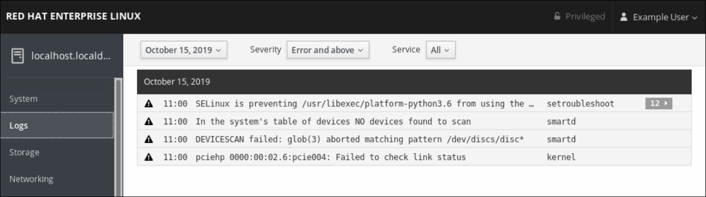
- Open log entry details by clicking on your selected log entry in the list.
You can filter the logs by date, severity or service. For more information, see Filtering logs in the web console.
4.2. Filtering logs in the web console
This section shows how to filter log entries in the web console.
Prerequisites
The web console interface must be installed and accessible.
For detalis, see Installing the web console.
Procedure
Log in to the THEL 8 web console.
For details, see Logging in to the web console.
- Click Logs.
By default, web console shows logs from your current boot. To filter by a different time range, click on the drop down menu with your current date and choose a preferred option.
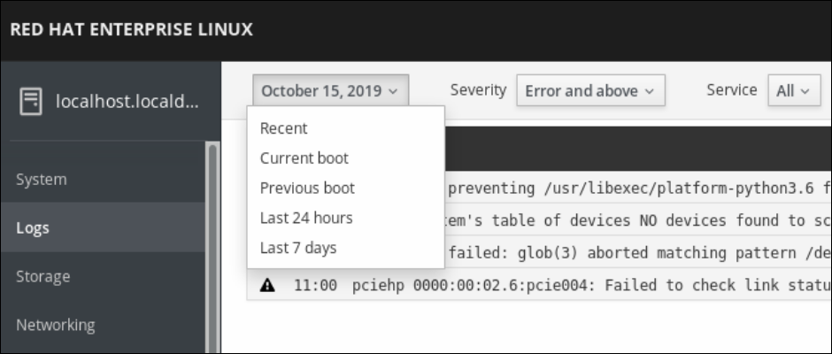
Error and above severity logs list is shown by default. To filter by different severity, click on the Error and above drop-down menu and choose a preferred severity.
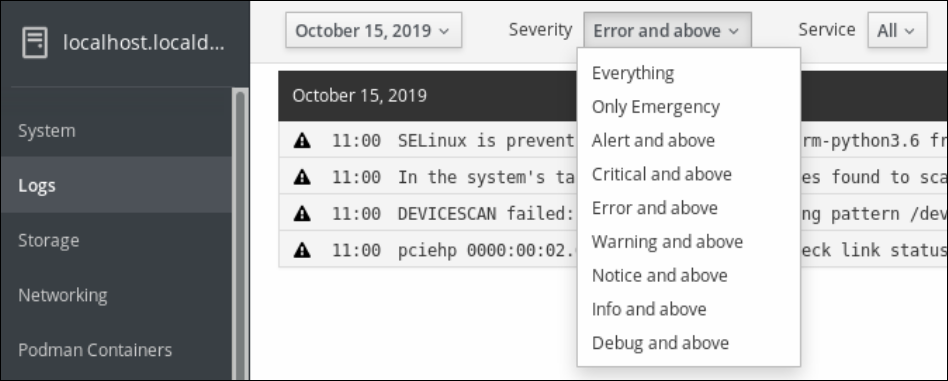
By default, web console shows logs for all services. To filter logs for a particular service, click on the All drop-down menu and select a service name.
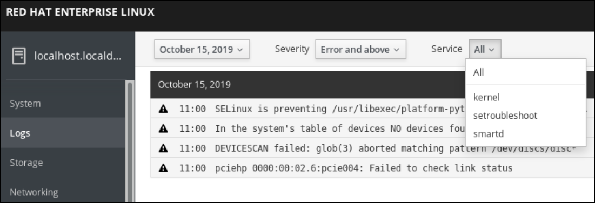
- To open a log entry, click on a selected log.
Chapter 5. Managing user accounts in the web console
The RHEL 8 web console offers an interface for adding, editing, and removing system user accounts. After reading this section, you will know:
- From where the existing accounts come from.
- How to add new accounts.
- How to set password expiration.
- How and when to terminate user sessions.
Prerequisites
- Being logged into the RHEL 8 web console with an account that has administrator permissions assigned. For details, see Logging in to the RHEL web console.
5.1. System user accounts managed in the web console
With user accounts displayed in the RHEL 8 web console you can:
- Authenticate users when accessing the system.
- Set them access rights to the system.
The RHEL 8 web console displays all user accounts located in the system. Therefore, you can see at least one user account just after the first login to the web console.
Ones you are logged in to the RHEL 8 web console, you can:
- Create new users accounts.
- Change their parameters.
- Lock accounts.
- Terminate the user session.
You can find the account management in the Accounts settings.

5.2. Adding new accounts in the web console
The following describes adding system user accounts in the RHEL 8 web console and setting administration rights to the accounts.
Procedure
- Log in to the RHEL web console.
- Click Accounts.
- Click Create New Account.
In the Full Name field, enter the full name of the user.
The RHEL web console automatically suggests a user name from the full name and fills it in the User Name field. If you do not want to use the original naming convention consisting of the first letter of the first name and the whole surname, update the suggestion.
In the Password/Confirm fields, enter the password and retype it for verification that your password is correct. The color bar placed below the fields shows you security level of the entered password, which does not allow you to create a user with a weak password.

- Click Create to save the settings and close the dialog box.
- Select the newly created account.
- Select Server Administrator in the Roles item.
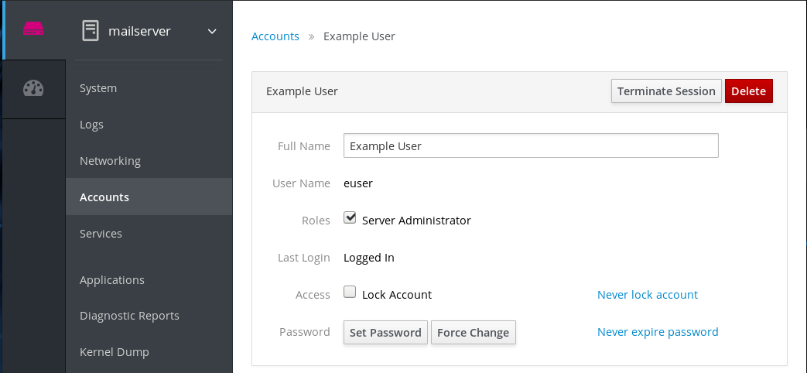
Now you can see the new account in the Accounts settings and you can use the credentials to connect to the system.
5.3. Enforcing password expiration in the web console
By default, user accounts have set passwords to never expire. To enforce password expiration, as administrator, set system passwords to expire after a defined number of days.
When the password expires, the next login attempt will prompt for a password change.
Procedure
- Log in to the RHEL 8 web console interface.
- Click Accounts.
- Select the user account for which to enforce password expiration.
- In the user account settings, click Never expire password.
In the Password Expiration dialog box, select Require password change every … days and enter a positive whole number representing the number of days when the password expires.

- Click Change.
To verify the settings, open the account settings. The RHEL 8 web console displays a link with the date of expiration.
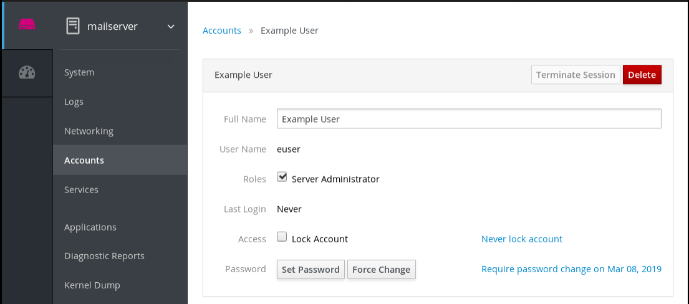
5.4. Terminating user sessions in the web console
A user creates user sessions when logging into the system. Terminating user sessions means to log the user out from the system.
It can be helpful if you need to perform administrative tasks sensitive to configuration changes, for example, system upgrades.
In each user account in the RHEL 8 web console, you can terminate all sessions for the account except for the web console session you are currently using. This prevents you from cutting yourself off the system.
Procedure
- Log in to the RHEL 8 web console.
- Click Accounts.
- Click the user account for which you want to terminate the session.
Click the Terminate Session button.
If the Terminate Session button is inactive, the user is not logged in the system.
The RHEL web console terminates the sessions.
Chapter 6. Managing services in the web console
This document describes how to manage system services in the web console interface. You can activate or deactivate services, restart or reload them or manage their automatic startup.
6.1. Activating or deactivating system services in the web console
This procedure activates or deactivates system services unsing the web console interface.
Prerequisites
The RHEL 8 web console has been installed.
For details, see Installing the web console.
Procedure
You can filter the services by name or description and also by Enabled, Disabled, or Static automatic startup. The interface shows the current state of the service and its recent logs.
Log in to the RHEL web console with administrator privileges.
For details, see Logging in to the web console.
- Click Services in the web console menu on the left.
The default tab for Services is System Services. If you want to manage targets, sockets, timers, or paths, switch to the respective tab in the menu on top.
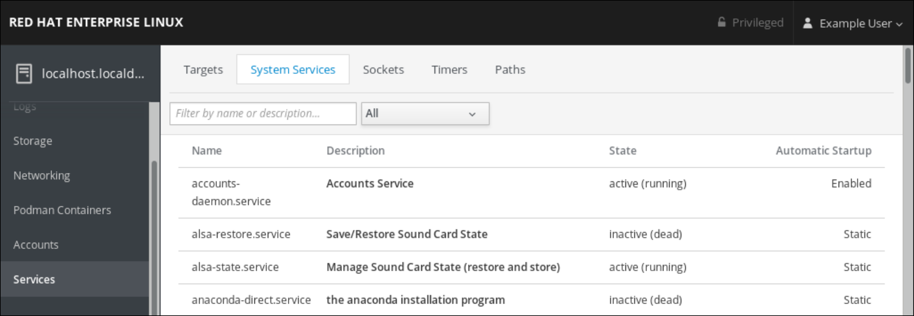
- To open service settings, click on a selected service from the list. You can tell which services are active or inactive by checking the State column.
Activate or deactivate a service:
To activate an inactive service, click the Start button.
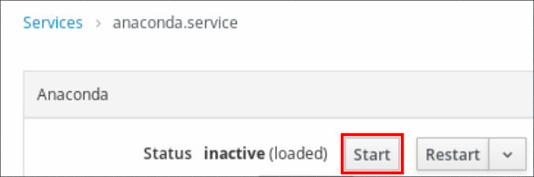
To deactivate an active service, click the Stop button.
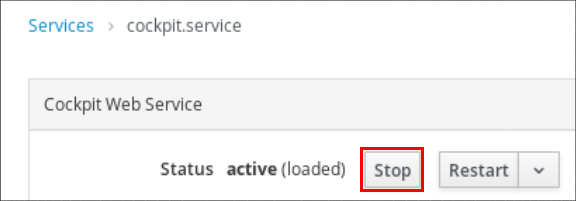
6.2. Restarting or reloading system services in the web console
This procedure restarts or reloads system services using the web console interface.
Prerequisites
The RHEL 8 web console has been installed.
For details, see Installing the web console.
Procedure
You can filter the services by name or description and also by Enabled, Disabled, or Static automatic startup. The interface shows the current state of the service and its recent logs.
Log in to the RHEL web console with administrator privileges.
For details, see Logging in to the web console.
- Click Services in the web console menu on the left.
The default tab for Services is System Services. If you want to manage targets, sockets, timers, or paths, switch to the respective tab in the menu on top.
- To open service settings, click on a selected service from the list.
Restart or reload a service:
To restart a service, click the Restart button.
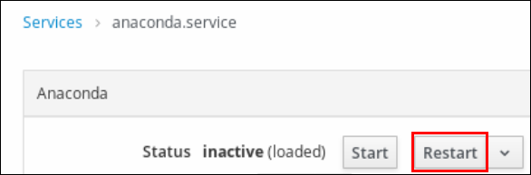
To reload a service, click the drop-down menu next to the Restart button and select Reload.
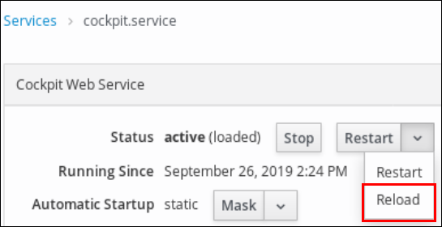
Chapter 7. Managing networking in the web console
The RHEL 8 web console supports basic network configuration. You can:
- Configure IPv4/IPv6 network settings
- Manage Bonds
- Manage network bridges
- Manage VLANs
- Manage Teams
- Inspect a network log
The RHEL 8 web console is build on top of the NetworkManager service.
For details, see Getting started with managing networking with NetworkManager.
Prerequisites
The RHEL 8 web console installed and enabled.
For details, see Installing the web console.
7.1. Configuring network bonds using the web console
This chapter helps you to understand how network bonding works and what all can configure in the web console. Additionally, you also find in this chapter the following guidelines:
- Adding a new bond
- Removing a bond
- Adding interfaces to a bond
- Removing interfaces from a bond
7.1.1. Understanding network bonding
Network bonding is a method to combine or aggregate network interfaces to provide a logical interface with higher throughput or redundancy.
The active-backup, balance-tlb, and balance-alb modes do not require any specific configuration of the network switch. However, other bonding modes require configuring the switch to aggregate the links. For example, Cisco switches requires EtherChannel for modes 0, 2, and 3, but for mode 4, the Link Aggregation Control Protocol (LACP) and EtherChannel are required.
For further details, see the documentation of your switch and https://www.kernel.org/doc/Documentation/networking/bonding.txt.
Certain network bonding features, such as the fail-over mechanism, do not support direct cable connections without a network switch. For further details, see the Is bonding supported with direct connection using crossover cables? KCS solution.
7.1.2. Bond modes
The behavior of the bonded interfaces depends upon the mode. The bonding modes provide fault tolerance, load balancing or both.
Load balancing modes
- Round Robin: Sequentially transmit packets from the first available interface to the last one.
Fault tolerance modes
- Active Backup: Only when the primary interface fails, one of a backup interfaces replaces it. Only a MAC address used by active interface is visible.
Broadcast: All transmissions are sent on all interfaces.
NoteBroadcasting significantly increases network traffic on all the bonded interfaces.
Fault tolerance and load balancing modes
- XOR: The destination MAC addresses are distributed equally between interfaces with a modulo hash. Each interface then serves the same group of MAC addresses.
802.3ad: Sets an IEEE 802.3ad dynamic link aggregation policy. Creates aggregation groups that share the same speed and duplex settings. Transmits and receives on all interfaces in the active aggregator.
NoteThis mode requires a switch that is 802.3ad compliant.
- Adaptive transmit load balancing: The outgoing traffic is distributed according to the current load on each interface. Incoming traffic is received by the current interface. If the receiving interface fails, another interface takes over the MAC address of the failed one.
Adaptive load balancing: Includes transmit and receive load balancing for IPv4 traffic.
Receive load balancing is achieved through Address Resolution Protocol (ARP) negotiation, therefore, it is necessary to set Link Monitoring to ARP in the bond’s configuration.
7.1.3. Adding a new bond using the web console
This section describes how to configure an active-backup bond on two or more network interfaces using the web console.
Other network bond modes can be configured similarly.
Prerequisites
- Two or more network cards are installed in the server.
- The network cards are connected to a switch.
Procedure
Log in to the web console.
For details, see Logging in to the web console.
- Open Networking.
- Click the Add Bond button.
- In the Bond Settings dialog box, enter a name for the new bond.
- In the Members field, select interfaces which should be a member of the bond.
[Optional] In the MAC drop down list, select a MAC address which will be used for this interface.
If you leave the MAC field empty, the bond will get one of the addresses that are listed in the drop down list.
In the Mode drop down list, select the mode.
For details, see Section 7.1.2, “Bond modes”.
If you select Active Backup, select the primary interface.
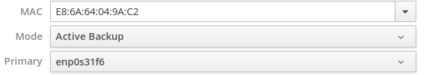
In the Link Monitoring drop down menu, leave here the MII option.
Only the adaptive load balancing mode requires to switch this option to ARP.
- The Monitoring Interval, Link up delay, and Link down delay fields, which contain values in milliseconds, leave as they are. Change it only for a troubleshooting purpose.
Click Apply.
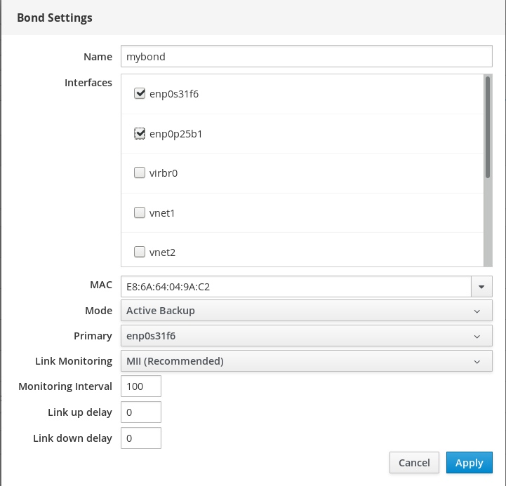
To verify that the bond works correctly, go to the Networking section and check if the Sending and Receiving columns in the Interfaces table display a network activity.
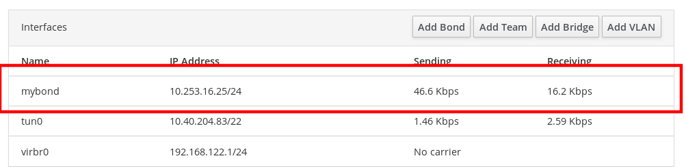
7.1.4. Adding interfaces to the bond using the web console
Network bonds can include multiple interfaces and you can add or remove any of them any time.
This section describes adding a network interface to an existing bond.
Prerequisites
- Having a bond with multiple interfaces configured as described in Section 7.1.3, “Adding a new bond using the web console”.
Procedure
Log in to the web console.
For details, see Logging in to the web console.
- Open Networking.
- In the Interfaces table, click on the bond you want to configure.
- In the bond settings screen, scroll down to the table of members (interfaces).
- Click the + icon.
Select the interface in the drop down list and click it.
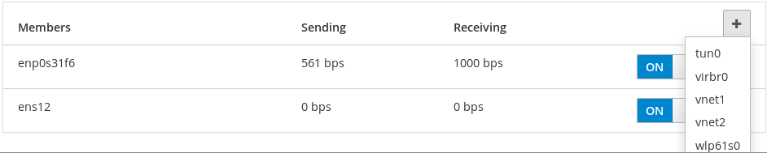
The RHEL 8 web console adds the interface to the bond.
7.1.5. Removing or disabling an interface from the bond using the web console
Network bonds can include multiple interfaces. If you need to change a device, you can remove or disable particular interfaces from the bond, which will work with the rest of the active interfaces.
Basically, you have two options, how to stop using an interface included in a bond. You can:
- Remove the interface from the bond.
- Disable the interface temporarily. The interface stays a part of the bond, but the bond will not use it until you enable it again.
Prerequisites
- Having a bond with multiple interfaces configured as described in Section 7.1.3, “Adding a new bond using the web console”.
Procedure
Log in to the RHEL web console.
For details, see Logging in to the web console.
- Open Networking.
- Click the bond you want to configure.
- In the bond settings screen, scroll down to the table of ports (interfaces).
Select the interface and and remove or disable it:
- Click the - icon to remove the interface.
- Switch the ON/OFF button to Off.
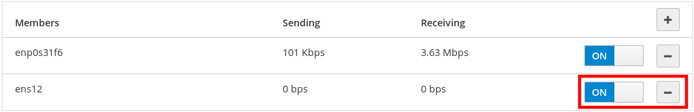
Based on your choice, the web console either removes or disables the interface from the bond and you can see it back in the Networking section as standalone interface.
7.1.6. Removing or disabling a bond using the web console
This section describes how to remove or disable a network bond using the web console. If you disable the bond, the interfaces stay in the bond, but the bond will not be used for network traffic.
Prerequisites
- There is an existing bond in the web console.
Procedure
Log in to the web console.
For details, see Logging in to the web console.
- Open Networking.
- Click the bond you want to remove.
In the bond settings screen, you can disable the bond with the ON/OFF button or click the Delete button to remove the bond permanently.
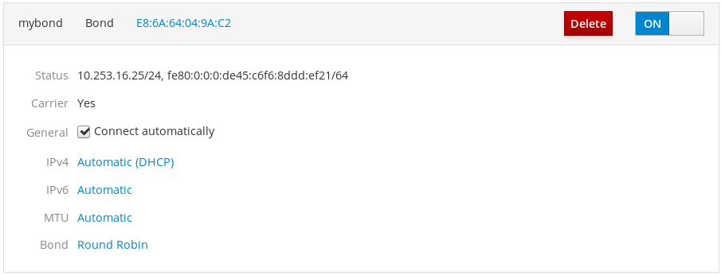
You can go back to Networking and verify that all the interfaces from the bond are now standalone interfaces.
7.2. Configuring network bridges in the web console
Network bridges are used to connect multiple interfaces to the one subnet with the same range of IP addresses.
7.2.1. Adding bridges in the web console
This section describes creating a software bridge on multiple network interfaces using the web console.
Procedure
Log in to the RHEL web console.
For details, see Logging in to the web console.
- Open Networking.
Click the Add Bridge button.
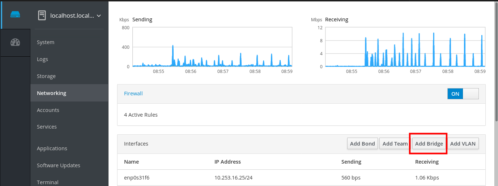
- In the Bridge Settings dialog box, enter a name for the new bridge.
- In the Port field, select interfaces which you want to put to the one subnet.
Optionally, you can select the Spanning Tree protocol (STP) to avoid bridge loops and broadcast radiation.
If you do not have a strong preference, leave the predefined values as they are.
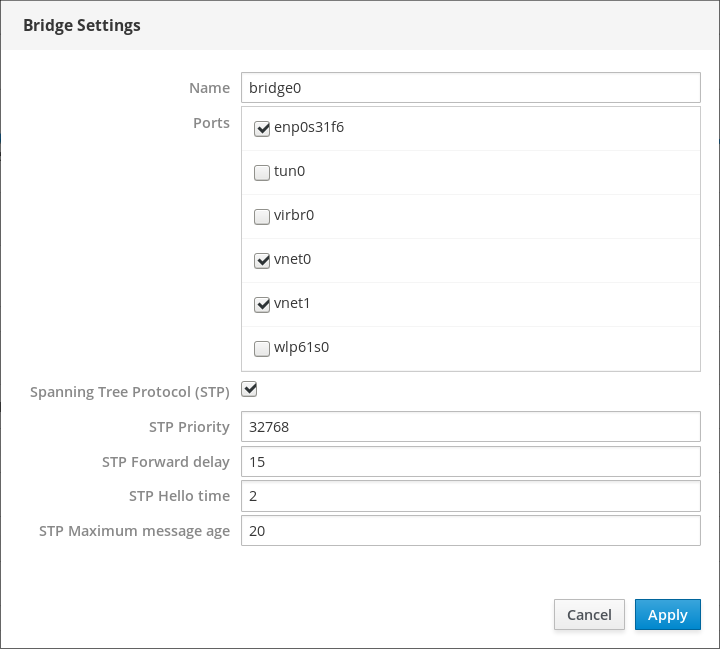
- Click Create.
If the bridge is successfully created, the web console displays the new bridge in the Networking section. Check values in the Sending and Receiving columns in the new bridge row.
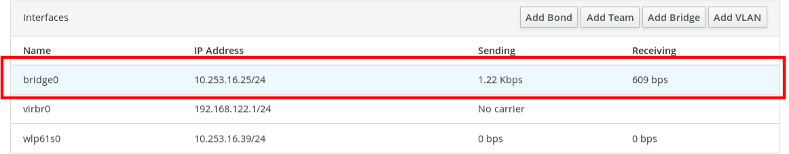
If you can see that zero bytes are sent and received through the bridge, the connection does not work correctly and you need to adjust the network settings.
7.2.2. Configuring a static IP address in the web console
IP address for your system can be assigned from the pool automatically by the DHCP server or you can configure the IP address manually. The IP address will not be influenced by the DHCP server settings.
This section describes configuring static IPv4 addresses of a network bridge using the RHEL web console.
Procedure
Log in to the RHEL web console.
For details, see Logging in to the web console.
- Open the Networking section.
Click the interface where you want to set the static IP address.
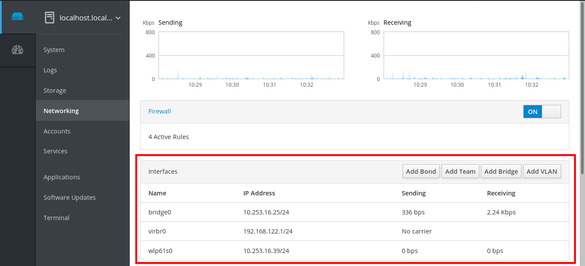
In the interface details screen, click the IPv4 configuration.
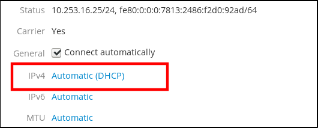
In the IPv4 Settings dialog box, select Manual in the Addresses drop down list.
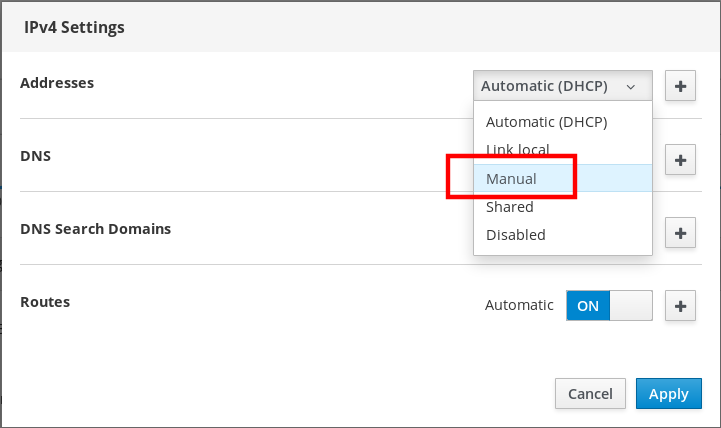
- Click Apply.
In the Addresses field, enter the desired IP address, netmask and gateway.
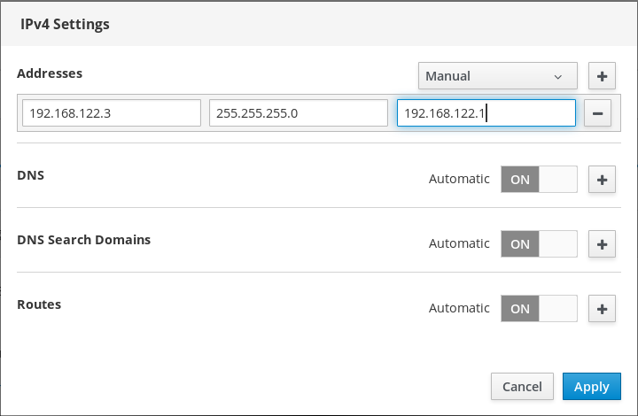
- Click Apply.
At this point, the IP address has been configured and the interface uses the new static IP address.
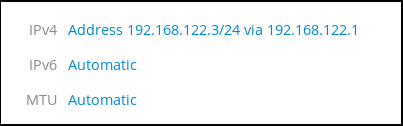
7.2.3. Removing interfaces from the bridge using the web console
Network bridges can include multiple interfaces. You can remove them from the bridge. Each removed interface will be automatically changed to the standalone interface.
This section describes removing a network interface from a software bridge created in the RHEL 8 system.
Prerequisites
- Having a bridge with multiple interfaces in your system.
Procedure
Log in to the RHEL web console.
For details, see Logging in to the web console.
- Open Networking.
Click the bridge you want to configure.
In the bridge settings screen, scroll down to the table of ports (interfaces).
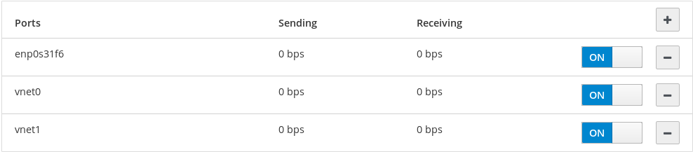
- Select the interface and click the - icon.
The RHEL 8 web console removes the interface from the bridge and you can see it back in the Networking section as standalone interface.
7.2.4. Deleting bridges in the web console
You can delete a software network bridge in the RHEL web console. All network interfaces included in the bridge will be changed automatically to standalone interfaces.
Prerequisites
- Having a bridge in your system.
Procedure
Log in to the RHEL web console.
For details, see Logging in to the web console.
- Open the Networking section.
Click the bridge you want to configure.
In the bridge settings screen, scroll down to the table of ports.
- Click Delete.
At this stage, go back to Networking and verify that all the network interfaces are displayed on the Interfaces tab. Interfaces which were part of the bridge can be inactive now. Therefore, you may need to activate them and set network parameters manually.
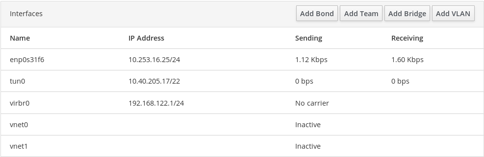
7.3. Configuring VLANs in the web console
VLANs (Virtual LANs) are virtual networks created on a single physical Ethernet interface.
Each VLAN is defined by an ID which represents a unique positive integer and works as a standalone interface.
The following procedure describes creating VLANs in the RHEL web console.
Prerequisites
- Having a network interface in your system.
Procedure
Log in to the RHEL web console.
For details, see Logging in to the web console.
- Open Networking.
Click Add VLAN button.
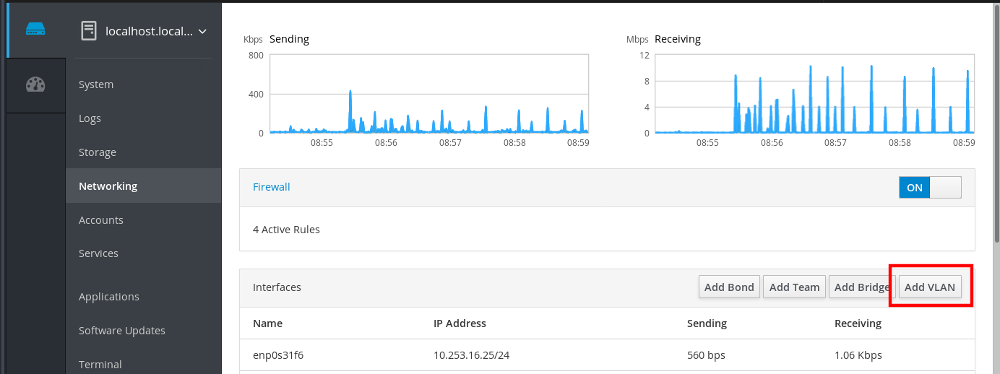
- In the VLAN Settings dialog box, select the physical interface for which you want to create a VLAN.
- Enter the VLAN Id or just use the predefined number.
In the Name field, you can see a predefined name consisted of the parent interface and VLAN Id. If it is not necessary, leave the name as it is.
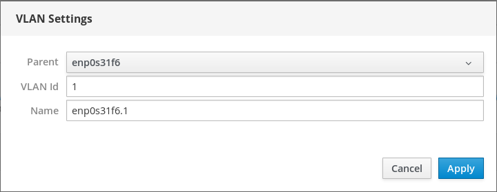
- Click Apply.
The new VLAN has been created and you need to click at the VLAN and configure the network settings.
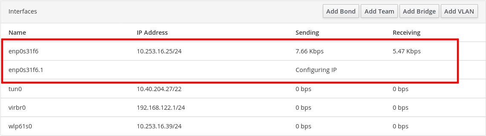
Chapter 8. Using the web console for managing firewall
A firewall is a way to protect machines from any unwanted traffic from outside. It enables users to control incoming network traffic on host machines by defining a set of firewall rules. These rules are used to sort the incoming traffic and either block it or allow through.
Prerequisites
The RHEL 8 web console configures the firewalld service.
For details about the firewalld service, see Getting started with firewalld.
8.1. Using the web console to run the firewall
This section describes where and how to run the RHEL 8 system firewall in the web console.
The RHEL 8 web console configures the firewalld service.
Procedure
Log in to the RHEL 8 web console.
For details, see Logging in to the web console.
- Open the Networking section.
In the Firewall section, click ON to run the firewall.
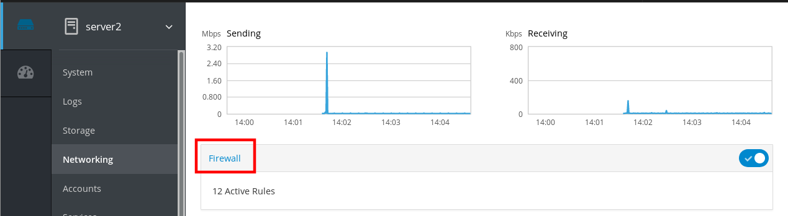
If you do not see the Firewall box, log in to the web console with the administration privileges.
At this stage, your firewall is running.
To configure firewall rules, see Adding rules in the web console using the web console.
8.2. Using the web console to stop the firewall
This section describes where and how to stop the RHEL 8 system firewall in the web console.
The RHEL 8 web console configures the firewalld service.
Procedure
Log in to the RHEL 8 web console.
For details, see Logging in to the web console.
- Open the Networking section.
In the Firewall section, click OFF to stop it.
If you do not see the Firewall box, log in to the web console with the administration privileges.
At this stage, the firewall has been stopped and does not secure your system.
8.3. firewalld
firewalld is a firewall service daemon that provides a dynamic customizable host-based firewall with a D-Bus interface. Being dynamic, it enables creating, changing, and deleting the rules without the necessity to restart the firewall daemon each time the rules are changed.
firewalld uses the concepts of zones and services, that simplify the traffic management. Zones are predefined sets of rules. Network interfaces and sources can be assigned to a zone. The traffic allowed depends on the network your computer is connected to and the security level this network is assigned. Firewall services are predefined rules that cover all necessary settings to allow incoming traffic for a specific service and they apply within a zone.
Services use one or more ports or addresses for network communication. Firewalls filter communication based on ports. To allow network traffic for a service, its ports must be open. firewalld blocks all traffic on ports that are not explicitly set as open. Some zones, such as trusted, allow all traffic by default.
Additional resources
-
firewalld(1)man page
8.4. Zones
firewalld can be used to separate networks into different zones according to the level of trust that the user has decided to place on the interfaces and traffic within that network. A connection can only be part of one zone, but a zone can be used for many network connections.
NetworkManager notifies firewalld of the zone of an interface. You can assign zones to interfaces with:
-
NetworkManager -
firewall-configtool -
firewall-cmdcommand-line tool - The RHEL web console
The latter three can only edit the appropriate NetworkManager configuration files. If you change the zone of the interface using the web console, firewall-cmd or firewall-config, the request is forwarded to NetworkManager and is not handled by firewalld.
The predefined zones are stored in the /usr/lib/firewalld/zones/ directory and can be instantly applied to any available network interface. These files are copied to the /etc/firewalld/zones/ directory only after they are modified. The default settings of the predefined zones are as follows:
block-
Any incoming network connections are rejected with an icmp-host-prohibited message for
IPv4and icmp6-adm-prohibited forIPv6. Only network connections initiated from within the system are possible. dmz- For computers in your demilitarized zone that are publicly-accessible with limited access to your internal network. Only selected incoming connections are accepted.
drop- Any incoming network packets are dropped without any notification. Only outgoing network connections are possible.
external- For use on external networks with masquerading enabled, especially for routers. You do not trust the other computers on the network to not harm your computer. Only selected incoming connections are accepted.
home- For use at home when you mostly trust the other computers on the network. Only selected incoming connections are accepted.
internal- For use on internal networks when you mostly trust the other computers on the network. Only selected incoming connections are accepted.
public- For use in public areas where you do not trust other computers on the network. Only selected incoming connections are accepted.
trusted- All network connections are accepted.
work- For use at work where you mostly trust the other computers on the network. Only selected incoming connections are accepted.
One of these zones is set as the default zone. When interface connections are added to NetworkManager, they are assigned to the default zone. On installation, the default zone in firewalld is set to be the public zone. The default zone can be changed.
The network zone names have been chosen to be self-explanatory and to allow users to quickly make a reasonable decision. To avoid any security problems, review the default zone configuration and disable any unnecessary services according to your needs and risk assessments.
Additional resources
` firewalld.zone(5) man page
8.5. Zones in the web console
Firewall zones are new in the RHEL 8.1.0 Beta.
The Red Hat Enterprise Linux web console implements major features of the firewalld service and enables you to:
- Add predefined firewall zones to a particular interface or range of IP addresses
- Configure zones with selecting services into the list of enabled services
- Disable a service by removing this service from the list of enabled service
- Remove a zone from an interface
8.6. Enabling zones using the web console
The web console enables you to apply predefined and existing firewall zones on a particular interface or a range of IP addresses. This section describes how to enable a zone on an interface.
Prerequisites
The RHEL 8 web console has been installed.
For details, see Installing the web console.
The firewall must be enabled.
For details, see Running the firewall in the web console.
Procedure
Log in to the RHEL web console with administration privileges.
For details, see Logging in to the web console.
- Click Networking.
Click on the Firewall box title.
If you do not see the Firewall box, log in to the web console with the administrator privileges.
- In the Firewall section, click Add Services.
- Click on the Add Zone button.
In the Add Zone dialog box, select a zone from the Trust level scale.
You can see here all zones predefined in the
firewalldservice.- In the Interfaces part, select an interface or interfaces on which the selected zone is applied.
In the Allowed Addresses part, you can select whether the zone is applied on:
- the whole subnet
or a range of IP addresses in the following format:
- 192.168.1.0
- 192.168.1.0/24
- 192.168.1.0/24, 192.168.1.0
Click on the Add zone button.
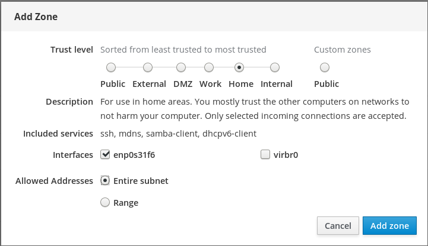
Verify the configuration in Active zones.
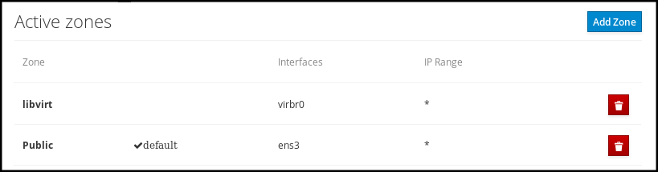
8.7. Enabling services on the firewall using the web console
By default, services are added to the default firewall zone. If you use more firewall zones on more network interfaces, you must select a zone first and then add the service with port.
The RHEL 8 web console displays predefined firewalld services and you can add them to active firewall zones.
The RHEL 8 web console configures the firewalld service.
The web console does not allow generic firewalld rules which are not listed in the web console.
Prerequisites
The RHEL 8 web console has been installed.
For details, see Installing the web console.
The firewall must be enabled.
For details, see Running the firewall in the web console.
Procedure
Log in to the RHEL web console with administrator privileges.
For details, see Logging in to the web console.
- Click Networking.
Click on the Firewall box title.
If you do not see the Firewall box, log in to the web console with the administrator privileges.
In the Firewall section, click Add Services.
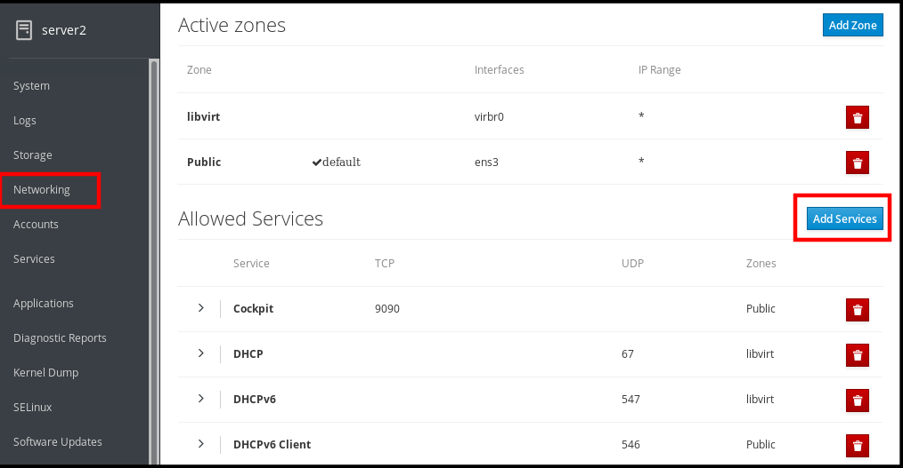
In the Add Services dialog box, select a zone for which you want to add the service.
The Add Services dialog box includes a list of active firewall zones only if the system includes multiple active zones.
If the system uses just one (the default) zone, the dialog does not include zone settings.
- In the Add Services dialog box, find the service you want to enable on the firewall.
Enable desired services.
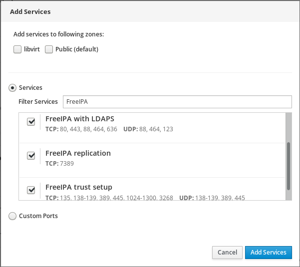
- Click Add Services.
At this point, the RHEL 8 web console displays the service in the list of Allowed Services.
8.8. Configuring custom ports using the web console
The web console allows you to add:
- Services listening on standard ports: Section 8.7, “Enabling services on the firewall using the web console”
- Services listening on custom ports.
This section describes how to add services with custom ports configured.
Prerequisites
The RHEL 8 web console has been installed.
For details, see Installing the web console.
The firewall must be enabled.
For details, see Running the firewall in the web console.
Procedure
Log in to the RHEL web console with administrator privileges.
For details, see Logging in to the web console.
- Click Networking.
Click on the Firewall box title.
If you do not see the Firewall box, log in to the web console with the administration privileges.
In the Firewall section, click Add Services.
In the Add Services dialog box, select a zone for which you want to add the service.
The Add Services dialog box includes a list of active firewall zones only if the system includes multiple active zones.
If the system uses just one (the default) zone, the dialog does not include zone settings.
- In the Add Ports dialog box, click on the Custom Ports radio button.
In the TCP and UDP fields, add ports according to examples. You can add ports in the following formats:
- Port numbers such as 22
- Range of port numbers such as 5900-5910
- Aliases such as nfs, rsync
NoteYou can add multiple values into each field. Values must be separated with the comma and without the space, for example: 8080,8081,http
After adding the port number in the TCP and/or UDP fields, verify the service name in the Name field.
The Name field displays the name of the service for which is this port reserved. You can rewrite the name if you are sure that this port is free to use and no server needs to communicate on this port.
- In the Name field, add a name for the service including defined ports.
Click on the Add Ports button.
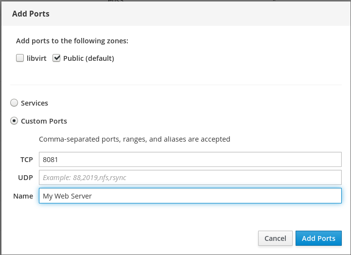
To verify the settings, go to the Firewall page and find the service in the list of Allowed Services.

8.9. Disabling zones using the web console
This section describes how to disable a firewall zone in your firewall configuration using the web console.
Prerequisites
The RHEL 8 web console has been installed.
For details, see Installing the web console.
Procedure
Log in to the RHEL web console with administrator privileges.
For details, see Logging in to the web console.
- Click Networking.
Click on the Firewall box title.
If you do not see the Firewall box, log in to the web console with the administrator privileges.
On the Active zones table, click on the Delete icon at the zone you want to remove.
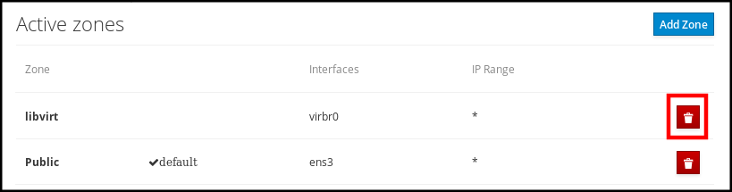
The zone is now disabled and the interface does not include opened services and ports which were configured in the zone.
Chapter 9. Managing partitions using the web console
The web console enables you to manage file systems on RHEL 8 systems.
For details about the available file systems, see the Overview of available file systems.
This chapter describes the following file system configurations:
9.1. Displaying partitions formatted with file systems in the web console
The Storage section in the web console displays all available file systems in the Filesystems table.
This section navigates you to get to the list of partitions formatted with file systems displayed in the web console.
Prerequisites
The web console must be installed and accessible.
For details, see Installing the web console.
Procedure
Log in to the RHEL web console.
For details, see Logging in to the web console.
- Click on the Storage tab.
In the Filesystems table, you can see all available partitions formatted with file systems, its name, size and how much space is available on each partition.
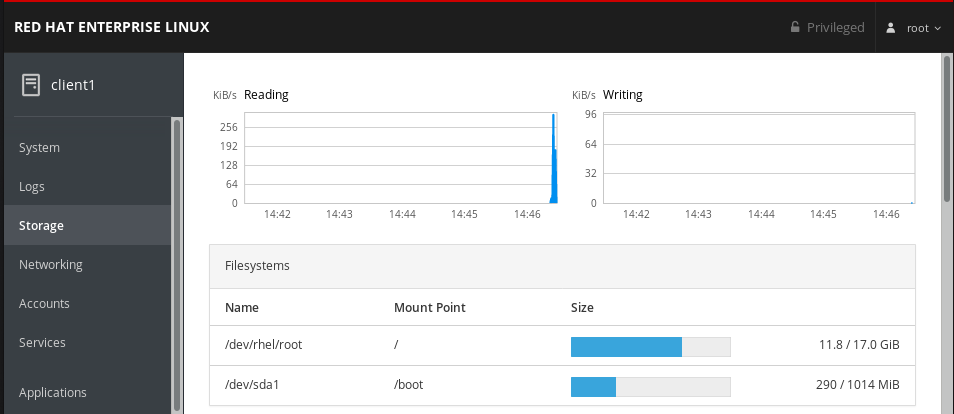
9.2. Creating partitions in the web console
To create a new partition:
- Use an existing partition table
- Create a partition
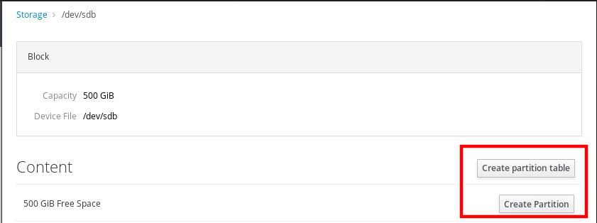
Prerequisites
The web console must be installed and accessible.
For details, see Installing the web console.
- An unformatted volume connected to the system visible in the Other Devices table of the Storage tab.
Procedure
Log in to the RHEL web console.
For details, see Logging in to the web console.
- Click the Storage tab.
- In the Other Devices table, click a volume in which you want to create the partition.
- In the Content section, click the Create Partition button.
- In the Create partition dialog box, select the size of the new partition.
In the Erase drop down menu, select:
- Don’t overwrite existing data — the RHEL web console rewrites only the disk header. Advantage of this option is speed of formatting.
- Overwrite existing data with zeros — the RHEL web console rewrites the whole disk with zeros. This option is slower because the program has to go through the whole disk, but it is more secure. Use this option if the disk includes any data and you need to overwrite it.
In the Type drop down menu, select a file system:
- XFS file system supports large logical volumes, switching physical drives online without outage, and growing an existing file system. Leave this file system selected if you do not have a different strong preference.
ext4 file system supports:
- Logical volumes
- Switching physical drives online without outage
- Growing a file system
- Shrinking a file system
Additional option is to enable encryption of partition done by LUKS (Linux Unified Key Setup), which allows you to encrypt the volume with a passphrase.
- In the Name field, enter the logical volume name.
In the Mounting drop down menu, select Custom.
The Default option does not ensure that the file system will be mounted on the next boot.
- In the Mount Point field, add the mount path.
- Select Mount at boot.
Click the Create partition button.

Formatting can take several minutes depending on the volume size and which formatting options are selected.
After the formatting has completed successfully, you can see the details of the formatted logical volume on the Filesystem tab.
To verify that the partition has been successfully added, switch to the Storage tab and check the Filesystems table.
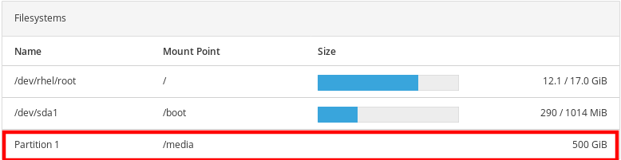
9.3. Deleting partitions in the web console
This paragraph is the procedure module introduction: a short description of the procedure.
Prerequisites
The web console must be installed and accessible.
For details, see Installing the web console.
Unmount the partition’s file system.
For details about mounting and unmounting partitions, see Section 9.4, “Mounting and unmounting file systems in the web console”.
Procedure
Log in to the RHEL web console.
For details, see Logging in to the web console.
- Click on the Storage tab.
- In the Filesystems table, select a volume in which you want to delete the partition.
In the Content section, click on the partition you want to delete.
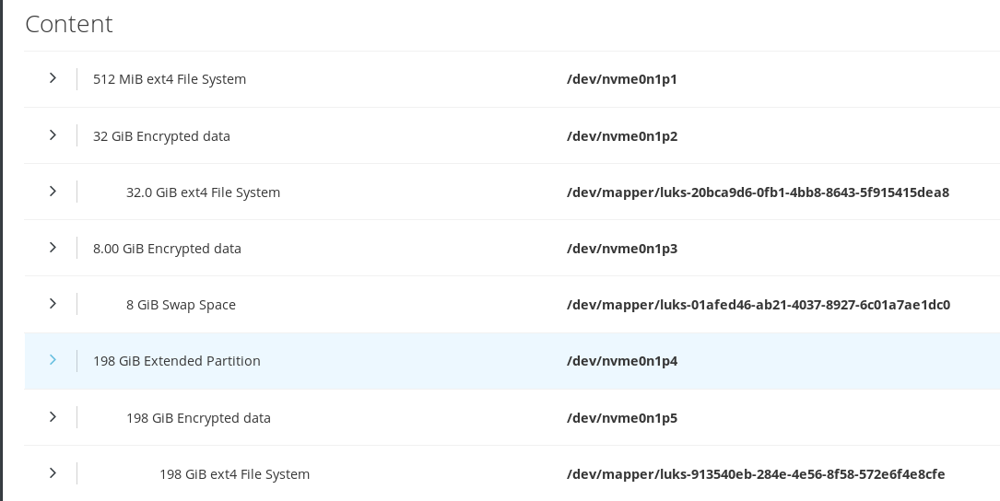
The partition rolls down and you can click on the Delete button.
The partition must not be mounted and used.
To verify that the partition has been successfully removed, switch to the Storage tab and check the Content table.
9.4. Mounting and unmounting file systems in the web console
To be able to use partitions on RHEL systems, you need to mount a filesystem on the partition as a device.
You also can unmount a file system and the RHEL system will stop using it. Unmounting the file system enables you to delete, remove, or re-format devices.
Prerequisites
The web console must be installed and accessible.
For details, see Installing the web console.
- If you want to unmount a file system, ensure that the system does not use any file, service, or application stored in the partition.
Procedure
Log in to the RHEL web console.
For details, see Logging in to the web console.
- Click on the Storage tab.
- In the Filesystems table, select a volume in which you want to delete the partition.
- In the Content section, click on the partition whose file system you want to mount or unmount.
Click on the Mount or Unmount button.
At this point, the file system has been mounted or unmounted according to your action.
Chapter 10. Managing storage devices in the web console
You can use the RHEL 8 web console to configure physical and virtual storage devices. This chapter provides instructions for these devices:
- Mounted NFS
- Logical Volumes
- RAID
- VDO
Prerequisites
The RHEL 8 web console has been installed.
For details, see Installing the web console.
10.1. Managing NFS mounts in the web console
The RHEL 8 web console enables you to mount remote directories using the Network File System (NFS) protocol.
NFS makes it possible to reach and mount remote directories located on the network and work with the files as if the directory was located on your physical drive.
Prerequisites
- NFS server name or IP address.
- Path to the directory on the remote server.
10.1.1. Connecting NFS mounts in the web console
The following steps aim to help you with connecting a remote directory to your file system using NFS.
Prerequisites
- NFS server name or IP address.
- Path to the directory on the remote server.
Procedure
Log in to the RHEL 8 web console.
For details, see Logging in to the web console.
- Click Storage.
Click + in the NFS mounts section.
- In the New NFS Mount dialog box, enter the server or IP address of the remote server.
- In the Path on Server field, enter the path to the directory you want to mount.
- In the Local Mount Point field, enter the path where you want to find the directory in your local system.
- Select Mount at boot. This ensures that the directory will be reachable also after the restart of the local system.
Optionally, select Mount read only if you do not want to change the content.
- Click Add.
At this point, you can open the mounted directory and verify that the content is accessible.
To troubleshoot the connection, you can adjust it with the Custom Mount Options.
10.1.2. Customizing NFS mount options in the web console
The following section provides you with information on how to edit an existing NFS mount and shows you where to add custom mount options.
Custom mount options can help you to troubleshoot the connection or change parameters of the NFS mount such as changing timeout limits or configuring authentication.
Prerequisites
- NFS mount added.
Procedure
Log in to the RHEL 8 web console.
For details, see Logging in to the web console.
- Click Storage.
- Click on the NFS mount you want to adjust.
If the remote directory is mounted, click Unmount.
The directory must not be mounted during the custom mount options configuration. Otherwise the web console does not save the configuration and this will cause an error.
Click Edit.
- In the NFS Mount dialog box, select Custom mount option.
Enter mount options separated by a comma. For example:
-
nfsvers=4— the NFS protocol version number -
soft— type of recovery after an NFS request times out -
sec=krb5— files on the NFS server can be secured by Kerberos authentication. Both the NFS client and server have to support Kerberos authentication.
For a complete list of the NFS mount options, enter
man nfsin the command line.-
- Click Apply.
- Click Mount.
Now you can open the mounted directory and verify that the content is accessible.
10.2. Managing Redundant Arrays of Independent Disks in the web console
Redundant Arrays of Independent Disks (RAID) represents a way how to arrange more disks into one storage.
RAID protects data stored in the disks against disk failure with the following data distribution strategies:
- Mirroring — data are copied to two different locations. If one disk fails, you have a copy and your data is not lost.
- Striping — data are evenly distributed among disks.
Level of protection depends on the RAID level.
The RHEL web console supports the following RAID levels:
- RAID 0 (Stripe)
- RAID 1 (Mirror)
- RAID 4 (Dedicated parity)
- RAID 5 (Distributed parity)
- RAID 6 (Double Distributed Parity)
- RAID 10 (Stripe of Mirrors)
Before you can use disks in RAID, you need to:
- Create a RAID.
- Format it with file system.
- Mount the RAID to the server.
Prerequisites
The RHEL 8 web console is running and accessible.
For details, see Installing the web console.
10.2.1. Creating RAID in the web console
This procedure aims to help you with configuring RAID in the RHEL 8 web console.
Prerequisites
- Physical disks connected to the system. Each RAID level requires different amount of disks.
Procedure
- Open the RHEL 8 web console.
- Click Storage.
Click the + icon in the RAID Devices box.
- In the Create RAID Device dialog box, enter a name for a new RAID.
- In the RAID Level drop-down list, select a level of RAID you want to use.
In the Chunk Size drop-down list, leave the predefined value as it is.
The Chunk Size value specifies how large is each block for data writing. If the chunk size is 512 KiB, the system writes the first 512 KiB to the first disk, the second 512 KiB is written to the second disk, and the third chunk will be written to the third disk. If you have three disks in your RAID, the fourth 512 KiB will be written to the first disk again.
Select disks you want to use for RAID.
- Click Create.
In the Storage section, you can see the new RAID in the RAID devices box and format it.
Now you have the following options how to format and mount the new RAID in the web console:
10.2.2. Formatting RAID in the web console
This section describes formatting procedure of the new software RAID device which is created in the RHEL 8 web interface.
Prerequisites
- Physical disks are connected and visible by RHEL 8.
- RAID is created.
- Consider the file system which will be used for the RAID.
- Consider creating of a partitioning table.
Procedure
- Open the RHEL 8 web console.
- Click Storage.
- In the RAID devices box, choose the RAID you want to format by clicking on it.
- In the RAID details screen, scroll down to the Content part.
Click to the newly created RAID.
- Click the Format button.
In the Erase drop-down list, select:
- Don’t overwrite existing data — the RHEL web console rewrites only the disk header. Advantage of this option is speed of formatting.
- Overwrite existing data with zeros — the RHEL web console rewrites the whole disk with zeros. This option is slower because the program has to go through the whole disk. Use this option if the RAID includes any data and you need to rewrite it.
- In the Type drop-down list, select a XFS file system, if you do not have another strong preference.
- Enter a name of the file system.
In the Mounting drop down list, select Custom.
The Default option does not ensure that the file system will be mounted on the next boot.
- In the Mount Point field, add the mount path.
- Select Mount at boot.
Click the Format button.
Formatting can take several minutes depending on the used formatting options and size of RAID.
After successful finish, you can see the details of the formatted RAID on the Filesystem tab.
- To use the RAID, click Mount.
At this point, the system uses mounted and formatted RAID.
10.2.3. Using the web console for creating a partition table on RAID
RAID requires formatting as any other storage device. You have two options:
- Format the RAID device without partitions
- Create a partition table with partitions
This section describes formatting RAID with the partition table on the new software RAID device created in the RHEL 8 web interface.
Prerequisites
- Physical disks are connected and visible by RHEL 8.
- RAID is created.
- Consider the file system used for the RAID.
- Consider creating a partitioning table.
Procedure
- Open the RHEL 8 web console.
- Click Storage.
- In the RAID devices box, select the RAID you want to edit.
- In the RAID details screen, scroll down to the Content part.
Click to the newly created RAID.
- Click the Create partition table button.
In the Erase drop-down list, select:
- Don’t overwrite existing data — the RHEL web console rewrites only the disk header. Advantage of this option is speed of formatting.
- Overwrite existing data with zeros — the RHEL web console rewrites the whole RAID with zeros. This option is slower because the program has to go through the whole RAID. Use this option if RAID includes any data and you need to rewrite it.
In the Partitioning drop-down list, select:
- Compatible with modern system and hard disks > 2TB (GPT) — GUID Partition Table is a modern recommended partitioning system for large RAIDs with more than four partitions.
Compatible with all systems and devices (MBR) — Master Boot Record works with disks up to 2 TB in size. MBR also support four primary partitions max.
- Click Format.
At this point, the partitioning table has been created and you can create partitions.
For creating partitions, see Using the web console for creating partitions on RAID.
10.2.4. Using the web console for creating partitions on RAID
This section describes creating a partition in the existing partition table.
Prerequisites
Partition table is created.
For details, see Section 10.2.3, “Using the web console for creating a partition table on RAID”
Procedure
- Open the RHEL 8 web console.
- Click Storage.
- In the RAID devices box, click to the RAID you want to edit.
- In the RAID details screen, scroll down to the Content part.
- Click to the newly created RAID.
- Click Create Partition.
- In the Create partition dialog box, set up the size of the first partition.
In the Erase drop-down list, select:
- Don’t overwrite existing data — the RHEL web console rewrites only the disk header. Advantage of this option is speed of formatting.
- Overwrite existing data with zeros — the RHEL web console rewrites the whole RAID with zeros. This option is slower because the program have to go through the whole RAID. Use this option if RAID includes any data and you need to rewrite it.
- In the Type drop-down list, select a XFS file system, if you do not have another strong preference.
- Enter any name for the file system. Do not use spaces in the name.
In the Mounting drop down list, select Custom.
The Default option does not ensure that the file system will be mounted on the next boot.
- In the Mount Point field, add the mount path.
- Select Mount at boot.
Click Create partition.
Formatting can take several minutes depending on used formatting options and size of RAID.
After successful finish, you can continue with creating other partitions.
At this point, the system uses mounted and formatted RAID.
10.2.5. Using the web console for creating a volume group on top of RAID
This section shows you how to build a volume group from software RAID.
Prerequisites
- RAID device, which is not formatted and mounted.
Procedure
- Open the RHEL 8 web console.
- Click Storage.
- Click the + icon in the Volume Groups box.
- In the Create Volume Group dialog box, enter a name for the new volume group.
In the Disks list, select a RAID device.
If you do not see the RAID in the list, unmount the RAID from the system. The RAID device must not be used by the RHEL 8 system.
- Click Create.
The new volume group has been created and you can continue with creating a logical volume.
10.3. Using the web console for configuring LVM logical volumes
Red Hat Enterprise Linux 8 supports the LVM logical volume manager. When you install a Red Hat Enterprise Linux 8, it will be installed on LVM automatically created during the installation.
The screenshot shows you a clean installation of the RHEL 8 system with two logical volumes in the RHEL 8 web console automatically created during the installation.
To find out more about logical volumes, follow the sections describing:
Prerequisites
- Physical drives, RAID devices, or any other type of block device from which you can create the logical volume.
10.3.1. Logical Volume Manager in the web console
The RHEL 8 web console provides a graphical interface to create LVM volume groups and logical volumes.
Volume groups create a layer between physical and logical volumes. It makes you possible to add or remove physical volumes without influencing logical volume itself. Volume groups appear as one drive with capacity consisting of capacities of all physical drives included in the group.
You can join physical drives into volume groups in the web console.
Logical volumes act as a single physical drive and it is built on top of a volume group in your system.
Main advantages of logical volumes are:
- Better flexibility than the partitioning system used on your physical drive.
- Ability to connect more physical drives into one volume.
- Possibility of expanding (growing) or reducing (shrinking) capacity of the volume on-line, without restart.
- Ability to create snapshots.
Additional resources
- For details, see Configuring and managing logical volumes.
10.3.2. Creating volume groups in the web console
The following describes creating volume groups from one or more physical drives or other storage devices. Logical volumes are created from volume groups.
Each volume group can include multiple logical volumes.
For details, see Volume groups.
Prerequisites
- Physical drives or other types of storage devices from which you want to create volume groups.
Procedure
- Log in to the RHEL 8 web console.
- Click Storage.
Click the + icon in the Volume Groups box.
- In the Name field, enter a name of a group without spaces.
Select the drives you want to combine to create the volume group.
It might happen that you cannot see devices as you expected. The RHEL web console displays only unused block devices. Used devices means, for example:
- Devices formatted with a file system
- Physical volumes in another volume group
Physical volumes being a member of another software RAID device
If you do not see the device, format it to be empty and unused.
- Click Create.
The web console adds the volume group in the Volume Groups section. After clicking the group, you can create logical volumes that are allocated from that volume group.
10.3.3. Creating logical volumes in the web console
The following steps describe how to create LVM logical volumes.
Prerequisites
- Volume group created. For details, see Creating volume groups in the web console.
Procedure
- Log in to the RHEL 8 web console.
- Click Storage.
- Click the volume group in which you want to create logical volumes.
- Click Create new Logical Volume.
- In the Name field, enter a name for the new logical volume without spaces.
In the Purpose drop down menu, select Block device for filesystems.
This configuration enables you to create a logical volume with the maximum volume size which is equal to the sum of the capacities of all drives included in the volume group.
Define the size of the logical volume. Consider:
- How much space the system using this logical volume will need.
- How many logical volumes you want to create.
You do not have to use the whole space. If necessary, you can grow the logical volume later.
- Click Create.
To verify the settings, click your logical volume and check the details.

At this stage, the logical volume has been created and you need to create and mount a file system with the formatting process.
10.3.4. Formatting logical volumes in the web console
Logical volumes act as physical drives. To use them, you need to format them with a file system.
Formatting logical volumes will erase all data on the volume.
The file system you select determines the configuration parameters you can use for logical volumes. For example, some the XFS file system does not support shrinking volumes. For details, see Resizing logical volumes in the web console.
The following steps describe the procedure to format logical volumes.
Prerequisites
- Logical volume created. For details, see Creating volume groups in the web console.
Procedure
- Log in to the RHEL web console.
- Click Storage.
- Click the volume group in which the logical volume is placed.
- Click the logical volume.
Click on the Unrecognized Data tab.
- Click Format.
In the Erase drop down menu, select:
- Don’t overwrite existing data — the RHEL web console rewrites only the disk header. Advantage of this option is speed of formatting.
- Overwrite existing data with zeros — the RHEL web console rewrites the whole disk with zeros. This option is slower because the program have to go through the whole disk. Use this option if the disk includes any data and you need to overwrite it.
In the Type drop down menu, select a file system:
XFS file system supports large logical volumes, switching physical drives online without outage, and growing an existing file system. Leave this file system selected if you do not have a different strong preference.
XFS does not support reducing the size of a volume formatted with an XFS file system
ext4 file system supports:
- Logical volumes
- Switching physical drives online without outage
- Growing a file system
- Shrinking a file system
You can also select a version with the LUKS (Linux Unified Key Setup) encryption, which allows you to encrypt the volume with a passphrase.
- In the Name field, enter the logical volume name.
In the Mounting drop down menu, select Custom.
The Default option does not ensure that the file system will be mounted on the next boot.
- In the Mount Point field, add the mount path.
Select Mount at boot.

Click Format.
Formatting can take several minutes depending on the volume size and which formatting options are selected.
After the formatting has completed successfully, you can see the details of the formatted logical volume on the Filesystem tab.
- To use the logical volume, click Mount.
At this point, the system can use mounted and formatted logical volume.
10.3.5. Resizing logical volumes in the web console
This section describes how to resize logical volumes. You can extend or even reduce logical volumes. Whether you can resize a logical volume depends on which file system you are using. Most file systems enable you to extend (grow) the volume online (without outage).
You can also reduce (shrink) the size of logical volumes, if the logical volume contains a file system which supports shrinking. It should be available, for example, in the ext3/ext4 file systems.
You cannot reduce volumes that contains GFS2 or XFS filesystem.
Prerequisites
- Existing logical volume containing a file system which supports resizing logical volumes.
Procedure
The following steps provide the procedure for growing a logical volume without taking the volume offline:
- Log in to the RHEL web console.
- Click Storage.
- Click the volume group in which the logical volume is placed.
- Click the logical volume.
- On the Volume tab, click Grow.
In the Grow Logical Volume dialog box, adjust volume space.
- Click Grow.
LVM grows the logical volume without system outage.
10.4. Using the web console for configuring thin logical volumes
Thinly-provisioned logical volumes enables you to allocate more space for designated applications or servers than how much space logical volumes actually contain.
For details, see Thinly-provisioned logical volumes (thin volumes).
The following sections describe:
Prerequisites
- Physical drives or other types of storage devices from which you want to create volume groups.
10.4.1. Creating pools for thin logical volumes in the web console
The following steps show you how to create a pool for thinly provisioned volumes:
Prerequisites
Procedure
- Log in to the RHEL 8 web console.
- Click Storage.
- Click the volume group in which you want to create thin volumes.
- Click Create new Logical Volume.
- In the Name field, enter a name for the new pool of thin volumes without spaces.
In the Purpose drop down menu, select Pool for thinly provisioned volumes. This configuration enables you to create the thin volume.
Define the size of the pool of thin volumes. Consider:
- How many thin volumes you will need in this pool?
- What is the expected size of each thin volume?
You do not have to use the whole space. If necessary, you can grow the pool later.
Click Create.
The pool for thin volumes has been created and you can add thin volumes.
10.4.2. Creating thin logical volumes in the web console
The following text describes creating a thin logical volume in the pool. The pool can include multiple thin volumes and each thin volume can be as large as the pool for thin volumes itself.
Using thin volumes requires regular checkup of actual free physical space of the logical volume.
Prerequisites
- Pool for thin volumes created. For details, see Creating volume groups in the web console.
Procedure
- Log in to the RHEL 8 web console.
- Click Storage.
- Click the volume group in which you want to create thin volumes.
- Click the desired pool.
Click Create Thin Volume.
- In the Create Thin Volume dialog box, enter a name for the thin volume without spaces.
Define the size of the thin volume.
- Click Create.
At this stage, the thin logical volume has been created and you need to format it.
10.4.3. Formatting logical volumes in the web console
Logical volumes act as physical drives. To use them, you need to format them with a file system.
Formatting logical volumes will erase all data on the volume.
The file system you select determines the configuration parameters you can use for logical volumes. For example, some the XFS file system does not support shrinking volumes. For details, see Resizing logical volumes in the web console.
The following steps describe the procedure to format logical volumes.
Prerequisites
- Logical volume created. For details, see Creating volume groups in the web console.
Procedure
- Log in to the RHEL web console.
- Click Storage.
- Click the volume group in which the logical volume is placed.
- Click the logical volume.
Click on the Unrecognized Data tab.
- Click Format.
In the Erase drop down menu, select:
- Don’t overwrite existing data — the RHEL web console rewrites only the disk header. Advantage of this option is speed of formatting.
- Overwrite existing data with zeros — the RHEL web console rewrites the whole disk with zeros. This option is slower because the program have to go through the whole disk. Use this option if the disk includes any data and you need to overwrite it.
In the Type drop down menu, select a file system:
XFS file system supports large logical volumes, switching physical drives online without outage, and growing an existing file system. Leave this file system selected if you do not have a different strong preference.
XFS does not support reducing the size of a volume formatted with an XFS file system
ext4 file system supports:
- Logical volumes
- Switching physical drives online without outage
- Growing a file system
- Shrinking a file system
You can also select a version with the LUKS (Linux Unified Key Setup) encryption, which allows you to encrypt the volume with a passphrase.
- In the Name field, enter the logical volume name.
In the Mounting drop down menu, select Custom.
The Default option does not ensure that the file system will be mounted on the next boot.
- In the Mount Point field, add the mount path.
Select Mount at boot.
Click Format.
Formatting can take several minutes depending on the volume size and which formatting options are selected.
After the formatting has completed successfully, you can see the details of the formatted logical volume on the Filesystem tab.
- To use the logical volume, click Mount.
At this point, the system can use mounted and formatted logical volume.
10.5. Using the web console for changing physical drives in volume groups
The following text describes how to change the drive in a volume group using the RHEL 8 web console.
The change of physical drives consists of the following procedures:
Prerequisites
- A new physical drive for replacing the old or broken one.
- The configuration expects that physical drives are organized in a volume group.
10.5.1. Adding physical drives to volume groups in the web console
The RHEL 8 web console enables you to add a new physical drive or other type of volume to the existing logical volume.
Prerequisites
- A volume group must be created.
- A new drive connected to the machine.
Procedure
- Log in to the RHEL 8 web console.
- Click Storage.
- In the Volume Groups box, click the volume group in which you want to add a physical volume.
In the Physical Volumes box, click the + icon.
In the Add Disks dialog box, select the preferred drive and click Add.
As a result, the RHEL 8 web console adds the physical volume. You can see it in the Physical Volumes section, and the logical volume can immediately start to write on the drive.
10.5.2. Removing physical drives from volume groups in the web console
If a logical volume includes multiple physical drives, you can remove one of the physical drives online.
The system moves automatically all data from the drive to be removed to other drives during the removal process. Notice that it can take some time.
The web console also verifies, if there is enough space for removing the physical drive.
Prerequisites
- A volume group with more than one physical drive connected.
Procedure
The following steps describe how to remove a drive from the volume group without causing outage in the RHEL web console.
- Log in to the RHEL 8 web console.
- Click Storage.
- Click the volume group in which you have the logical volume.
- In the Physical Volumes section, locate the preferred volume.
Click the - icon.
The RHEL 8 web console verifies, if the logical volume has enough free space for removing the disk. If not, you cannot remove the disk and it is necessary to add another disk first. For details, see Adding physical drives to logical volumes in the web console.
As results, the RHEL 8 web console removes the physical volume from the created logical volume without causing an outage.
10.6. Using the web console for managing Virtual Data Optimizer volumes
This chapter describes the Virtual Data Optimizer (VDO) configuration using the RHEL 8 web console. After reading it, you will be able to:
- Create VDO volumes
- Format VDO volumes
- Extend VDO volumes
Prerequisites
The RHEL 8 web console is installed and accessible.
For details, see Installing the web console.
10.6.1. VDO volumes in the web console
Red Hat Enterprise Linux 8 supports Virtual Data Optimizer (VDO). VDO is a block virtualization technology that combines:
- Compression
- For details, see Enabling or disabling compression in VDO.
- Deduplication
- For details, see Enabling or disabling deduplication in VDO.
- Thin provisioning
- For details, see Thinly-provisioned logical volumes (thin volumes).
Using these technologies, VDO:
- Saves storage space inline
- Compresses files
- Eliminates duplications
- Enables you to allocate more virtual space than how much the physical or logical storage provides
- Enables you to extend the virtual storage by growing
VDO can be created on top of many types of storage. In the RHEL 8 web console, you can configure VDO on top of:
LVM
NoteIt is not possible to configure VDO on top of thinly-provisioned volumes.
- Physical volume
- Software RAID
For details about placement of VDO in the Storage Stack, see System Requirements.
Additional resources
- For details about VDO, see Deduplicating and compressing storage.
10.6.2. Creating VDO volumes in the web console
This section helps you to create a VDO volume in the RHEL web console.
Prerequisites
- Physical drives, LVMs, or RAID from which you want to create VDO.
Procedure
Log in to the RHEL 8 web console.
For details, see Logging in to the web console.
- Click Storage.
Click the + icon in the VDO Devices box.
- In the Name field, enter a name of a VDO volume without spaces.
- Select the drive that you want to use.
In the Logical Size bar, set up the size of the VDO volume. You can extend it more than ten times, but consider for what purpose you are creating the VDO volume:
- For active VMs or container storage, use logical size that is ten times the physical size of the volume.
- For object storage, use logical size that is three times the physical size of the volume.
For details, see Deploying VDO.
In the Index Memory bar, allocate memory for the VDO volume.
For details about VDO system requirements, see System Requirements.
Select the Compression option. This option can efficiently reduce various file formats.
For details, see Enabling or disabling compression in VDO.
Select the Deduplication option.
This option reduces the consumption of storage resources by eliminating multiple copies of duplicate blocks. For details, see Enabling or disabling deduplication in VDO.
- [Optional] If you want to use the VDO volume with applications that need a 512 bytes block size, select Use 512 Byte emulation. This reduces the performance of the VDO volume, but should be very rarely needed. If in doubt, leave it off.
Click Create.
If the process of creating the VDO volume succeeds, you can see the new VDO volume in the Storage section and format it with a file system.

10.6.3. Formatting VDO volumes in the web console
VDO volumes act as physical drives. To use them, you need to format them with a file system.
Formatting VDO will erase all data on the volume.
The following steps describe the procedure to format VDO volumes.
Prerequisites
- A VDO volume is created. For details, see Section 10.6.2, “Creating VDO volumes in the web console”.
Procedure
Log in to the RHEL 8 web console.
For details, see Logging in to the web console.
- Click Storage.
- Click the VDO volume.
- Click on the Unrecognized Data tab.
Click Format.

In the Erase drop down menu, select:
- Don’t overwrite existing data
- The RHEL web console rewrites only the disk header. The advantage of this option is the speed of formatting.
- Overwrite existing data with zeros
- The RHEL web console rewrites the whole disk with zeros. This option is slower because the program has to go through the whole disk. Use this option if the disk includes any data and you need to rewrite them.
In the Type drop down menu, select a filesystem:
The XFS file system supports large logical volumes, switching physical drives online without outage, and growing. Leave this file system selected if you do not have a different strong preference.
XFS does not support shrinking volumes. Therefore, you will not be able to reduce volume formatted with XFS.
- The ext4 file system supports logical volumes, switching physical drives online without outage, growing, and shrinking.
You can also select a version with the LUKS (Linux Unified Key Setup) encryption, which allows you to encrypt the volume with a passphrase.
- In the Name field, enter the logical volume name.
In the Mounting drop down menu, select Custom.
The Default option does not ensure that the file system will be mounted on the next boot.
- In the Mount Point field, add the mount path.
Select Mount at boot.
Click Format.
Formatting can take several minutes depending on the used formatting options and the volume size.
After a successful finish, you can see the details of the formatted VDO volume on the Filesystem tab.
- To use the VDO volume, click Mount.
At this point, the system uses the mounted and formatted VDO volume.
10.6.4. Extending VDO volumes in the web console
This section describes extending VDO volumes in the RHEL 8 web console.
Prerequisites
- The VDO volume created.
Procedure
Log in to the RHEL 8 web console.
For details, see Logging in to the web console.
- Click Storage.
Click your VDO volume in the VDO Devices box.
- In the VDO volume details, click the Grow button.
In the Grow logical size of VDO dialog box, extend the logical size of the VDO volume.
Original size of the logical volume from the screenshot was 6 GB. As you can see, the RHEL web console enables you to grow the volume to more than ten times the size and it works correctly because of the compression and deduplication.
- Click Grow.
If the process of growing VDO succeeds, you can see the new size in the VDO volume details.
Chapter 11. Managing software updates in the web console
The Software Updates module in the web console is based on the yum utility. For more information about updating sofware with yum, see the Checking for updates and updating packages section in the Configuring basic system settings title.
11.1. Managing manual software updates in the web console
This section describes how to manually update your software using the web console.
Prerequisites
The web console must be installed and accessible.
For details, see Installing the web console.
Procedure
Log in to the RHEL 8 web console.
For details, see Logging in to the web console.
Click Software Updates.
The list of available updates refreshes automatically if the last check happened more than 24 hours ago. To trigger a refresh, click the Check for Updates button.
Apply updates.
To install all available updates, click the Install all updates button.
If you have security updates available, you can install them separately by clicking the Install Security Updates button.

You can watch the update log while the update is running.
After the system applies updates, you get a recommendation to restart your system.
We recommend this especially if the update included a new kernel or system services that you do not want to restart individually.
Click Ignore to cancel the restart, or Restart Now to proceed with restarting your system.
After the system restart, log in to the web console and go to the Software Updates page to verify that the update has been successful.
11.2. Managing automatic software updates in the web console
In the web console, you can choose to apply all updates, or security updates and also manage periodicity and time of your automatic updates.
Prerequisites
- The web console must be installed and accessible. For details, see Installing the web console.
Procedure
Log in to RHEL 8 web console.
For details, see Logging in to the web console.
- Click Software Updates.
- If you want to automatically apply only security updates, click on the Apply all updates drop-down menu and select Apply security updates.
- To modify day of the automatic update, click on the every day drop-down menu and select a specific day.
To modify time of the automatic update, click on the 6:00 drop-down menu and select a specific time.
If you want to disable automatic software updates, click on switch next to Automatic Updates to move it to disabled position.
Chapter 12. Managing subscriptions in the web console
The RHEL 8 web console can help you to register and manage your subscription for Red Hat Enterprise Linux 8.
To get a subscription for your Red Hat Enterprise Linux, you need to have an account in the Red Hat Customer Portal or an activation key.
This chapter covers:
- Subscription management in the RHEL 8 web console.
- Registering subscriptions for your system in the web console with the Red Hat user name and password.
- Registering subscriptions with the activation key.
Prerequisites
- Purchased subscriptions.
- The system subjected to subscription has to be connected to the Internet because the web console needs to communicate with the Red Hat Customer Portal.
12.1. Subscription management in the web console
The RHEL 8 web console provides an interface for using Red Hat Subscription Manager installed on your local system. The Subscription Manager connects to the Red Hat Customer Portal and verifies all available:
- Active subscriptions
- Expired subscriptions
- Renewed subscriptions
If you want to renew the subscription or get a different one in Red Hat Customer Portal, you do not have to update the Subscription Manager data manually. The Subscription Manager synchronizes data with Red Hat Customer Portal automatically.
12.2. Registering subscriptions with credentials in the web console
The following describes subscribing the newly installed Red Hat Enterprise Linux using the RHEL 8 web console.
Prerequisites
Valid user account in the Red Hat Customer Portal.
See the Create a Red Hat Login page.
- Active subscription for the RHEL system.
Procedure
Type subscription in the search field and press the Enter key.
Alternatively, you can log in to the RHEL 8 web console. For details, see Logging in to the web console.
In the polkit authentication dialog for privileged tasks, add the password belonging user name displayed in the dialog.

- Click Authenticate.
In the Subscriptions dialog box, click Register.

Enter your Customer Portal credentials.
Enter the name of your organization.
You need to add the organization name or organization ID, if you have more than one account in the Red Hat Customer Portal. To get the org ID, go to your Red Hat contact point.
- Click the Register button.
At this point, your RHEL 8 system has been successfully registered.
12.3. Registering subscriptions with activation keys in the web console
To register a subscription for Red Hat Enterprise Linux,
Prerequisites
- If you do not have a user account in the portal, your vendor provides you with the activation key.
Procedure
Type subscription in the search field and press the Enter key.
Alternatively, you can log in to the RHEL 8 web console. For details, see Logging in to the web console.
In the authentication dialog, add the system username and password you created during the system installation.
- Click Authenticate.
In the Subscriptions dialog box, click Register.
- Enter the activation key in the registration form.
Enter the name of your organization.
You need to add the organization name or organization ID, if you have more than one account in the Red Hat Customer Portal.
To get the org ID, go to your Red Hat contact point.
- Click the Register button.
At this point, your RHEL 8 system has been successfully registered.
Chapter 13. Configuring kdump in the web console
The following sections provide an overview of how to setup and test the kdump configuration through the Red Hat Enterprise Linux web console. The web console is part of a default installation of Red Hat Enterprise Linux 8 and enables or disables the kdump service at boot time. Further, the web console conveniently enables you to configure the reserved memory for kdump; or to select the vmcore saving location in an uncompressed or compressed format.
Prerequisites
- See Red Hat Enterprise Linux web console for further details.
13.1. Configuring kdump memory usage and target location in web console
The procedure below shows you how to use the Kernel Dump tab in the Red Hat Enterprise Linux web console interface to configure the amount of memory that is reserved for the kdump kernel. The procedure also describes how to specify the target location of the vmcore dump file and how to test your configuration.
Prerequisites
- Introduction to operating the web console
Procedure
-
Open the
Kernel Dumptab and start thekdumpservice. -
Configure the
kdumpmemory usage through the command line. Click the link next to the
Crash dump locationoption.
Select the
Local Filesystemoption from the drop-down and specify the directory you want to save the dump in.
Alternatively, select the
Remote over SSHoption from the drop-down to send the vmcore to a remote machine using the SSH protocol.Fill the
Server,ssh key, andDirectoryfields with the remote machine address, ssh key location, and a target directory.Another choice is to select the
Remote over NFSoption from the drop-down and fill theMountfield to send the vmcore to a remote machine using the NFS protocol.NoteTick the
Compressioncheck box to reduce the size of the vmcore file.
Test your configuration by crashing the kernel.
WarningThis step disrupts execution of the kernel and results in a system crash and loss of data.
Additional resources
-
For a complete list of currently supported targets for
kdump, see Supported kdump targets. - For information on how to configure an SSH server and set up a key-based authentication, see Configuring basic system settings in Red Hat Enterprise Linux.
Chapter 14. Using the web console for managing virtual machines
To manage virtual machines in a graphical interface on a RHEL 8 host, you can use the Virtual Machines pane in the RHEL 8 web console.

The following sections describe the web console’s virtualization management capabilities and provide instructions for using them.
14.1. Overview of virtual machine management using the web console
The RHEL 8 web console is a web-based interface for system administration. With the installation of a web console plug-in, the web console can be used to manage virtual machines (VMs) on connected servers. It provides a graphical view of VMs on a host system to which the web console can connect, and allows monitoring system resources and adjusting configuration with ease.
Using the web console for VM management, you can do for example the following:
- Create and delete VMs
- Install operating systems on VMs
- Start and shut down VMs
- View information about VMs
- Create and attach disks to VMs
- Configure virtual CPU settings for VMs
- Manage virtual network interfaces
- Interact with VMs using VM consoles
The Virtual Machine Manager (virt-manager) application is still supported in RHEL 8 but has been deprecated. The web console is intended to become its replacement in a subsequent release. It is, therefore, recommended that you get familiar with the web console for managing virtualization in a GUI.
However, in RHEL 8, some features may only be accessible from either virt-manager or the command line. For details, see Section 14.12, “Differences between virtualization features in virtual machine manager and the web console”.
For more information on the Virtual Machine Manager, see RHEL 7 documentation.
14.2. Setting up the web console to manage virtual machines
Before using the RHEL 8 web console to manage VMs, you must install the web console virtual machine plug-in.
Prerequisites
Ensure that the web console is installed on your machine.
$ yum info cockpit Installed Packages Name : cockpit [...]If the web console is not installed, see the Managing systems using the web console guide for more information about installing the web console.
Procedure
Install the
cockpit-machinesplug-in.# yum install cockpit-machinesIf the installation is successful, appears in the web console side menu.

14.3. Creating virtual machines and installing guest operating systems using the web console
The following sections provide information on how to use the RHEL 8 web console to create virtual machines and install operating systems on VMs.
14.3.1. Creating virtual machines using the web console
To create a virtual machine (VM) on the host machine to which the web console is connected, follow the instructions below.
Prerequisites
- To use the web console to manage VMs, install the web console VM plug-in.
- Make sure you have sufficient amount of system resources to allocate to your VMs, such as disk space, RAM, or CPUs. The recommended values may vary significantly depending on the intended tasks and workload of the VMs.
A locally available operating system (OS) installation source, which can be one of the following:
- An ISO image of an installation medium
- A disk image of an existing VM installation
Procedure
In the interface of the web console, click .
The Create New Virtual Machine dialog appears.

Enter the basic configuration of the VM you want to create.
- Connection - The connection to the host to be used by the VM.
- Name - The name of the VM.
- Installation Source Type - The installation can use a local installation medium, a URL, a PXE network boot, or a disk image of an existing VM.
- Installation Source - The path or URL that points to the installation source.
- OS Vendor - The vendor of the VM’s operating system.
- Operating System - The VM’s operating system. Note that Red Hat provides support only for a limited set of guest operating systems.
- Memory - The amount of memory with which to configure the VM.
- Storage Size - The amount of storage space with which to configure the VM.
- Immediately Start VM - Whether or not the VM will start immediately after it is created.
Click .
The VM is created. If the Immediately Start VM checkbox is selected, the VM will immediately start and begin installing the guest operating system.
If you did not choose Existing Disk Image as the installation source type, you must install the operating system the first time the VM is run.
Additional resources
- For information on installing an operating system on a VM, see Section 14.3.2, “Installing guest operating systems using the web console”.
14.3.2. Installing guest operating systems using the web console
The first time a virtual machine (VM) loads, you must install an operating system on the VM.
If the Immediately Start VM checkbox in the Create New Virtual Machine dialog is checked, the installation routine of the operating system starts automatically when the VM is created.
Prerequisites
- To use the web console to manage VMs, install the web console VM plug-in.
- A VM on which to install an operating system.
Procedure
In the interface, click a row with the name of the VM on which you want to install a guest OS.
The row expands to reveal the Overview pane with basic information about the selected VM and controls for installing and deleting the VM.
Click .
The installation routine of the operating system runs in the VM console.
Troubleshooting
- If the installation routine fails, the VM must be deleted and recreated.
14.4. Deleting virtual machines using the web console
To delete a virtual machine (VM) and its associated storage files from the host to which the RHEL 8 web console is connected with, follow the procedure below:
Prerequisites
- To use the web console to manage VMs, install the web console VM plug-in.
- Back up important data from the VM.
- Shut down the VM.
- Make sure no other VMs use the same associated storage.
Procedure
In the interface, click the name of the VM you want to delete.
The row expands to reveal the Overview pane with basic information about the selected VM and controls for shutting down and deleting the VM.

Click .
A confirmation dialog appears.

- [Optional] To delete all or some of the storage files associated with the VM, select the checkboxes next to the storage files you want to delete.
Click .
The VM and any selected storage files are deleted.
14.5. Powering up and powering down virtual machines using the web console
Using the RHEL 8 web console, you can run, shut down, and restart virtual machines. You can also send a non-maskable interrupt to an unresponsive virtual machine.
14.5.1. Powering up virtual machines using the web console
If a virtual machine (VM) is in the shut off state, you can start it using the RHEL 8 web console.
Prerequisites
- An inactive VM that is already defined.
- The name of the VM.
- To use the web console to manage VMs, install the web console VM plug-in.
Procedure
In the interface, click a row with the name of the VM you want to start.
The row expands to reveal the Overview pane with basic information about the selected VM and controls for shutting down and deleting the VM.
Click .
The VM starts, and you can connect to its console or graphical output.
-
[Optional] To set up the VM to start automatically when the host starts, click the
Autostartcheckbox.
Additional resources
- For information on shutting down a VM, see Section 14.5.2, “Powering down virtual machines in the web console”.
- For information on restarting a VM, see Section 14.5.3, “Restarting virtual machines using the web console”.
- For information on sending a non-maskable interrupt to a VM, see Section 14.5.4, “Sending non-maskable interrupts to VMs using the web console”.
14.5.2. Powering down virtual machines in the web console
If a virtual machine (VM) is in the running state, you can shut it down using the RHEL 8 web console.
Prerequisites
- To use the web console to manage VMs, install the web console VM plug-in.
Procedure
In the interface, click a row with the name of the VM you want to shut down.
The row expands to reveal the Overview pane with basic information about the selected VM and controls for shutting down and deleting the VM.
Click .
The VM shuts down.
Troubleshooting
- If the VM does not shut down, click the arrow next to the button and select .
- To shut down an unresponsive VM, you can also send a non-maskable interrupt. For more information, see Section 14.5.4, “Sending non-maskable interrupts to VMs using the web console”.
Additional resources
- For information on starting a VM, see Section 14.5.1, “Powering up virtual machines using the web console”.
- For information on restarting a VM, see Section 14.5.3, “Restarting virtual machines using the web console”.
14.5.3. Restarting virtual machines using the web console
If a virtual machine (VM) is in the running state, you can restart it using the RHEL 8 web console.
Prerequisites
- To use the web console to manage VMs, install the web console VM plug-in.
Procedure
In the interface, click a row with the name of the VM you want to restart.
The row expands to reveal the Overview pane with basic information about the selected VM and controls for shutting down and deleting the VM.
Click .
The VM shuts down and restarts.
Troubleshooting
- If the VM does not restart, click the arrow next to the button and select .
- To restart an unresponsive VM, you can also send a non-maskable interrupt. For more information, see Section 14.5.4, “Sending non-maskable interrupts to VMs using the web console”.
Additional resources
- For information on starting a VM, see Section 14.5.1, “Powering up virtual machines using the web console”.
- For information on shutting down a VM, see Section 14.5.2, “Powering down virtual machines in the web console”.
14.5.4. Sending non-maskable interrupts to VMs using the web console
Sending a non-maskable interrupt (NMI) may cause an unresponsive running virtual machine (VM) to respond or shut down. For example, you can send the Ctrl+Alt+Del NMI to a VM that is not responding to standard input.
Prerequisites
- To use the web console to manage VMs, install the web console VM plug-in.
Procedure
In the interface, click a row with the name of the VM to which you want to send an NMI.
The row expands to reveal the Overview pane with basic information about the selected VM and controls for shutting down and deleting the VM.
Click the arrow next to the button and select .
An NMI is sent to the VM.
Additional resources
- For information on starting a VM, see Section 14.5.1, “Powering up virtual machines using the web console”.
- For information on restarting a VM, see Section 14.5.3, “Restarting virtual machines using the web console”.
- For information on shutting down a VM, see Section 14.5.2, “Powering down virtual machines in the web console”.
14.6. Viewing virtual machine information using the web console
Using the RHEL 8 web console, you can view information about the virtual storage and VMs to which the web console is connected.
14.6.1. Viewing a virtualization overview in the web console
The following procedure describes how to view an overview of virtual machines (VMs) and the available virtual storage to which the web console session is connected.
Prerequisites
- To use the web console to manage VMs, install the web console VM plug-in.
Procedure
Click in the web console’s side menu.
A dialog box appears with information about the available storage and the VMs to which the web console is connected.
The information includes the following:
- Storage Pools - The number of storage pools that can be accessed by the web console and their state.
- Networks - The number of networks that can be accessed by the web console and their state.
- Name - The name of the VM.
- Connection - The type of libvirt connection, system or session.
- State - The state of the VM.
Additional resources
- For instructions on viewing detailed information about the storage pools the web console session can access, see Section 14.6.2, “Viewing storage pool information using the web console”.
- For instructions on viewing basic information about a selected VM to which the web console session is connected, see Section 14.6.3, “Viewing basic virtual machine information in the web console”.
- For instructions on viewing resource usage for a selected VM to which the web console session is connected, see Section 14.6.4, “Viewing virtual machine resource usage in the web console”.
- For instructions on viewing disk information about a selected VM to which the web console session is connected, see Section 14.6.5, “Viewing virtual machine disk information in the web console”.
- For instructions on viewing virtual network interface information about a selected VM to which the web console session is connected, see Section 14.6.6, “Viewing and editing virtual network interface information in the web console”.
14.6.2. Viewing storage pool information using the web console
The following procedure describes how to view detailed storage pool information about the virtual machine (VM) storage pools that the web console session can access.
Prerequisites
- To use the web console to manage VMs, install the web console VM plug-in.
Procedure
Click at the top of the interface. The Storage Pools window appears, showing a list of configured storage pools.

The information includes the following:
- Name - The name of the storage pool.
- Size - The size of the storage pool.
- Connection - The connection used to access the storage pool.
- State - The state of the storage pool.
Click a row with the name of the storage whose information you want to see.
The row expands to reveal the Overview pane with the following information about the selected storage pool:
- Path - The path to the storage pool.
- Persistent - Whether or not the storage pool is persistent.
- Autostart - Whether or not the storage pool starts automatically.
- Type - The type of the storage pool.

To view a list of storage volumes created from the storage pool, click .
The Storage Volumes pane appears, showing a list of configured storage volumes with their sizes and the amount of space used.

Additional resources
- For instructions on viewing information about all of the VMs to which the web console session is connected, see Section 14.6.1, “Viewing a virtualization overview in the web console”.
- For instructions on viewing basic information about a selected VM to which the web console session is connected, see Section 14.6.3, “Viewing basic virtual machine information in the web console”.
- For instructions on viewing resource usage for a selected VM to which the web console session is connected, see Section 14.6.4, “Viewing virtual machine resource usage in the web console”.
- For instructions on viewing disk information about a selected VM to which the web console session is connected, see Section 14.6.5, “Viewing virtual machine disk information in the web console”.
- For instructions on viewing virtual network interface information about a selected VM to which the web console session is connected, see Section 14.6.6, “Viewing and editing virtual network interface information in the web console”.
14.6.3. Viewing basic virtual machine information in the web console
The following describes how to view basic information about a selected virtual machine (VM) to which the web console session is connected.
Prerequisites
- To use the web console to manage VMs, install the web console VM plug-in.
Procedure
- Click in the web console side menu.
Click a row with the name of the VM whose information you want to see.
The row expands to reveal the Overview pane with basic information about the selected VM and controls for shutting down and deleting the VM.
If another tab is selected, click .

The information includes the following:
- Memory - The amount of memory assigned to the VM.
- Emulated Machine - The machine type emulated by the VM.
- vCPUs - The number of virtual CPUs configured for the VM.
- Boot Order - The boot order configured for the VM.
- CPU Type - The architecture of the virtual CPUs configured for the VM.
- Autostart - Whether or not autostart is enabled for the VM.
Additional resources
- For instructions on viewing information about all of the VMs to which the web console session is connected, see Section 14.6.1, “Viewing a virtualization overview in the web console”.
- For instructions on viewing information about the storage pools to which the web console session is connected, see Section 14.6.2, “Viewing storage pool information using the web console”.
- For instructions on viewing resource usage for a selected VM to which the web console session is connected, see Section 14.6.4, “Viewing virtual machine resource usage in the web console”.
- For instructions on viewing disk information about a selected VM to which the web console session is connected, see Section 14.6.5, “Viewing virtual machine disk information in the web console”.
- For instructions on viewing virtual network interface information about a selected VM to which the web console session is connected, see Section 14.6.6, “Viewing and editing virtual network interface information in the web console”.
- To see more detailed virtual CPU information and configure the virtual CPUs configured for a VM, see Section 14.7, “Managing virtual CPUs using the web console”.
14.6.4. Viewing virtual machine resource usage in the web console
The following procedure describes how to view the memory and virtual CPU usage information about a selected virtual machine (VM) to which the web console session is connected.
Prerequisites
- To use the web console to manage VMs, install the web console VM plug-in.
Procedure
In the interface, click a row with the name of the VM whose information you want to see.
The row expands to reveal the Overview pane with basic information about the selected VM and controls for shutting down and deleting the VM.
Click .
The Usage pane appears with information about the memory and virtual CPU usage of the VM.

Additional resources
- For instructions on viewing information about all of the VMs to which the web console session is connected, see Section 14.6.1, “Viewing a virtualization overview in the web console”.
- For instructions on viewing information about the storage pools to which the web console session is connected, see Section 14.6.2, “Viewing storage pool information using the web console”.
- For instructions on viewing basic information about a selected VM to which the web console session is connected, see Section 14.6.3, “Viewing basic virtual machine information in the web console”.
- For instructions on viewing disk information about a selected VM to which the web console session is connected, see Section 14.6.5, “Viewing virtual machine disk information in the web console”.
- For instructions on viewing virtual network interface information about a selected VM to which the web console session is connected, see Section 14.6.6, “Viewing and editing virtual network interface information in the web console”.
14.6.5. Viewing virtual machine disk information in the web console
The following procedure describes how to view the disk information of a virtual machine (VM) to which the web console session is connected.
Prerequisites
To use the web console to manage VMs, install the web console VM plug-in.
Procedure
Click a row with the name of the VM whose information you want to see.
The row expands to reveal the Overview pane with basic information about the selected VM and controls for shutting down and deleting the VM.
Click .
The Disks pane appears with information about the disks assigned to the VM.

The information includes the following:
- Device - The device type of the disk.
- Target - The controller type of the disk.
- Used - The amount of the disk that is used.
- Capacity - The size of the disk.
- Bus - The bus type of the disk.
- Readonly - Whether or not the disk is read-only.
- Source - The disk device or file.
Additional resources
- For instructions on viewing information about all of the VMs to which the web console session is connected, see Section 14.6.1, “Viewing a virtualization overview in the web console”.
- For instructions on viewing information about the storage pools to which the web console session is connected, see Section 14.6.2, “Viewing storage pool information using the web console”.
- For instructions on viewing basic information about a selected VM to which the web console session is connected, see Section 14.6.3, “Viewing basic virtual machine information in the web console”.
- For instructions on viewing resource usage for a selected VM to which the web console session is connected, see Section 14.6.4, “Viewing virtual machine resource usage in the web console”.
- For instructions on viewing virtual network interface information about a selected VM to which the web console session is connected, see Section 14.6.6, “Viewing and editing virtual network interface information in the web console”.
14.6.6. Viewing and editing virtual network interface information in the web console
The following procedure describes how to view information about the virtual network interfaces on a selected virtual machine (VM):
Prerequisites
- To use the web console to manage VMs, install the web console VM plug-in.
Procedure
In the interface, click a row with the name of the VM whose information you want to see.
The row expands to reveal the Overview pane with basic information about the selected VM and controls for shutting down and deleting the VM.
Click .
The Networks Interfaces pane appears with information about the virtual network interface configured for the VM.

The information includes the following:
- Type - The type of network interface for the VM. Types include direct, network, bridge, ethernet, hostdev, mcast, user, and server.
- Model type - The model of the virtual network interface.
- MAC Address - The MAC address of the virtual network interface.
- Source - The source of the network interface. This is dependent on the network type.
- State - The state of the virtual network interface.
To edit the virtual network interface settings, Click . The Virtual Network Interface Settings dialog opens.

- Change the interface type, source, or model.
Click . The network interface is modified.
NoteChanges to the virtual network interface settings take effect only after restarting the VM.
Additional resources
- For instructions on viewing information about all of the VMs to which the web console session is connected, see Section 14.6.1, “Viewing a virtualization overview in the web console”.
- For instructions on viewing information about the storage pools to which the web console session is connected, see Section 14.6.2, “Viewing storage pool information using the web console”.
- For instructions on viewing basic information about a selected VM to which the web console session is connected, see Section 14.6.3, “Viewing basic virtual machine information in the web console”.
- For instructions on viewing resource usage for a selected VM to which the web console session is connected, see Section 14.6.4, “Viewing virtual machine resource usage in the web console”.
- For instructions on viewing disk information about a selected VM to which the web console session is connected, see Section 14.6.5, “Viewing virtual machine disk information in the web console”.
14.7. Managing virtual CPUs using the web console
Using the RHEL 8 web console, you can review and configure virtual CPUs used by virtual machines (VMs) to which the web console is connected.
Prerequisites
- To use the web console to manage VMs, install the web console VM plug-in.
Procedure
In the interface, click a row with the name of the VMs for which you want to view and configure virtual CPU parameters.
The row expands to reveal the Overview pane with basic information about the selected VMs, including the number of virtual CPUs, and controls for shutting down and deleting the VM.
Click the number of vCPUs in the Overview pane.
The vCPU details dialog appears.
 Note
NoteThe warning in the vCPU details dialog only appears after the virtual CPU settings are changed.
Configure the virtual CPUs for the selected VM.
vCPU Count - Enter the number of virtual CPUs for the VM.
NoteThe vCPU count cannot be greater than the vCPU Maximum.
- vCPU Maximum - Enter the maximum number of virtual CPUs that can be configured for the VM.
- Sockets - Select the number of sockets to expose to the VM.
- Cores per socket - Select the number of cores for each socket to expose to the VM.
- Threads per core - Select the number of threads for each core to expose to the VM.
Click .
The virtual CPUs for the VM are configured.
NoteChanges to virtual CPU settings only take effect after the VM is restarted.
14.8. Managing virtual machine disks using the web console
Using the RHEL 8 web console, you can manage the disks configured for the virtual machines to which the web console is connected.
You can:
14.8.1. Viewing virtual machine disk information in the web console
The following procedure describes how to view the disk information of a virtual machine (VM) to which the web console session is connected.
Prerequisites
To use the web console to manage VMs, install the web console VM plug-in.
Procedure
Click a row with the name of the VM whose information you want to see.
The row expands to reveal the Overview pane with basic information about the selected VM and controls for shutting down and deleting the VM.
Click .
The Disks pane appears with information about the disks assigned to the VM.
The information includes the following:
- Device - The device type of the disk.
- Target - The controller type of the disk.
- Used - The amount of the disk that is used.
- Capacity - The size of the disk.
- Bus - The bus type of the disk.
- Readonly - Whether or not the disk is read-only.
- Source - The disk device or file.
Additional resources
- For instructions on viewing information about all of the VMs to which the web console session is connected, see Section 14.6.1, “Viewing a virtualization overview in the web console”.
- For instructions on viewing information about the storage pools to which the web console session is connected, see Section 14.6.2, “Viewing storage pool information using the web console”.
- For instructions on viewing basic information about a selected VM to which the web console session is connected, see Section 14.6.3, “Viewing basic virtual machine information in the web console”.
- For instructions on viewing resource usage for a selected VM to which the web console session is connected, see Section 14.6.4, “Viewing virtual machine resource usage in the web console”.
- For instructions on viewing virtual network interface information about a selected VM to which the web console session is connected, see Section 14.6.6, “Viewing and editing virtual network interface information in the web console”.
14.8.2. Adding new disks to virtual machines using the web console
You can add new disks to virtual machines (VMs) by creating a new storage volume and attaching it to a VM using the RHEL 8 web console.
Prerequisites
- To use the web console to manage VMs, install the web console VM plug-in.
Procedure
In the interface, click a row with the name of the VM for which you want to create and attach a new disk.
The row expands to reveal the Overview pane with basic information about the selected VM and controls for shutting down and deleting the VM.
Click .
The Disks pane appears with information about the disks configured for the VM.
Click .
The Add Disk dialog appears.

- Select the Create New option.
Configure the new disk.
Pool - Select the storage pool from which the virtual disk will be created.
NoteWhen creating new disks for VMs using the web console, you can select only directory-type storage pools.
- Target - Select a target for the virtual disk that will be created.
- Name - Enter a name for the virtual disk that will be created.
- Size - Enter the size and select the unit (MiB or GiB) of the virtual disk that will be created.
-
Format - Select the format for the virtual disk that will be created. The supported types are
qcow2andraw. Persistence - If checked, the virtual disk is persistent. If not checked, the virtual disk is transient.
NoteTransient disks can only be added to VMs that are running.
Click .
The virtual disk is created and connected to the VM.
Additional resources
- For instructions on viewing disk information about a selected VM to which the web console session is connected, see Section 14.8.1, “Viewing virtual machine disk information in the web console”.
- For information on attaching existing disks to VMs, see Section 14.8.3, “Attaching existing disks to virtual machines using the web console”.
- For information on detaching disks from VMs, see Section 14.8.4, “Detaching disks from virtual machines”.
14.8.3. Attaching existing disks to virtual machines using the web console
The following procedure describes how to attach existing storage volumes as disks to a virtual machine (VM) using the RHEL 8 web console.
Prerequisites
- To use the web console to manage VMs, install the web console VM plug-in.
Procedure
In the interface, click a row with the name of the VM to which you want to attach an existing disk.
The row expands to reveal the Overview pane with basic information about the selected VM and controls for shutting down and deleting the VM.
Click .
The Disks pane appears with information about the disks configured for the VM.
Click .
The Add Disk dialog appears.
Click the Use Existing button.
The appropriate configuration fields appear in the Add Disk dialog.

Configure the disk for the VM.
Pool - Select the storage pool from which the virtual disk will be attached.
NoteWhen using the web console, you can select only directory-type storage pools for attaching disks to VMs.
- Target - Select a target for the virtual disk.
- Volume - Select the storage volume that will be attached.
- Persistence - Check to make the virtual disk persistent. Clear to make the virtual disk transient.
Click
The selected virtual disk is attached to the VM.
Additional resources
- For instructions on viewing disk information about a selected VM to which the web console session is connected, see Section 14.8.1, “Viewing virtual machine disk information in the web console”.
- For information on creating new disks and attaching them to VMs, see Section 14.8.2, “Adding new disks to virtual machines using the web console”.
- For information on detaching disks from VMs, see Section 14.8.4, “Detaching disks from virtual machines”.
14.8.4. Detaching disks from virtual machines
The following describes how to detach disks from virtual machines (VMs) using the RHEL 8 web console.
Prerequisites
- To use the web console to manage VMs, install the web console VM plug-in.
Procedure
In the interface, click a row with the name of the VM from which you want to detach an existing disk.
The row expands to reveal the Overview pane with basic information about the selected VM and controls for shutting down and deleting the VM.
Click .
The Disks pane appears with information about the disks configured for the VM.
-
Click the button next to the disk you want to detach from the VM. A
Remove Diskconfirmation dialog appears. In the confirmation dialog, click .
The virtual disk is detached from the VM.
Additional resources
- For instructions on viewing disk information about a selected VM to which the web console session is connected, see Section 14.8.1, “Viewing virtual machine disk information in the web console”.
- For information on creating new disks and attaching them to VMs, see Section 14.8.2, “Adding new disks to virtual machines using the web console”.
- For information on attaching existing disks to VMs, see Section 14.8.3, “Attaching existing disks to virtual machines using the web console”.
14.9. Using the web console for managing virtual machine network interfaces
Using the RHEL 8 web console, you can manage the virtual network interfaces for the virtual machines to which the web console is connected. You can:
14.9.1. Viewing and editing virtual network interface information in the web console
The following procedure describes how to view information about the virtual network interfaces on a selected virtual machine (VM):
Prerequisites
- To use the web console to manage VMs, install the web console VM plug-in.
Procedure
In the interface, click a row with the name of the VM whose information you want to see.
The row expands to reveal the Overview pane with basic information about the selected VM and controls for shutting down and deleting the VM.
Click .
The Networks Interfaces pane appears with information about the virtual network interface configured for the VM.
The information includes the following:
- Type - The type of network interface for the VM. Types include direct, network, bridge, ethernet, hostdev, mcast, user, and server.
- Model type - The model of the virtual network interface.
- MAC Address - The MAC address of the virtual network interface.
- Source - The source of the network interface. This is dependent on the network type.
- State - The state of the virtual network interface.
To edit the virtual network interface settings, Click . The Virtual Network Interface Settings dialog opens.
- Change the interface type, source, or model.
Click . The network interface is modified.
NoteChanges to the virtual network interface settings take effect only after restarting the VM.
Additional resources
- For instructions on viewing information about all of the VMs to which the web console session is connected, see Section 14.6.1, “Viewing a virtualization overview in the web console”.
- For instructions on viewing information about the storage pools to which the web console session is connected, see Section 14.6.2, “Viewing storage pool information using the web console”.
- For instructions on viewing basic information about a selected VM to which the web console session is connected, see Section 14.6.3, “Viewing basic virtual machine information in the web console”.
- For instructions on viewing resource usage for a selected VM to which the web console session is connected, see Section 14.6.4, “Viewing virtual machine resource usage in the web console”.
- For instructions on viewing disk information about a selected VM to which the web console session is connected, see Section 14.6.5, “Viewing virtual machine disk information in the web console”.
14.9.2. Connecting virtual network interfaces in the web console
Using the RHEL 8 web console, you can reconnect disconnected virtual network interface configured for a selected virtual machine (VM).
Prerequisites
- To use the web console to manage VMs, install the web console VM plug-in.
Procedure
In the interface, click a row with the name of the VM whose virtual network interface you want to connect.
The row expands to reveal the Overview pane with basic information about the selected VM and controls for shutting down and deleting the VM.
Click .
The Networks pane appears with information about the virtual network interfaces configured for the VM.

Click in the row of the virtual network interface you want to connect.
The selected virtual network interface connects to the VM.
14.9.3. Disconnecting virtual network interfaces in the web console
Using the RHEL 8 web console, you can disconnect the virtual network interfaces connected to a selected virtual machine (VM).
Prerequisites
- To use the web console to manage VMs, install the web console VM plug-in.
Procedure
In the interface, click a row with the name of the VM whose virtual network interface you want to disconnect.
The row expands to reveal the Overview pane with basic information about the selected VM and controls for shutting down and deleting the VM.
Click .
The Network Interfaces pane appears with information about the virtual network interfaces configured for the VM.

Click in the row of the virtual network interface you want to disconnect.
The selected virtual network interface disconnects from the VM.
14.10. Interacting with virtual machines using the web console
To interact with a virtual machine (VM) in the RHEL 8 web console, you need to connect to the VM’s console. These include both graphical and serial consoles.
- To interact with the VM’s graphical interface in the web console, use the graphical console.
- To interact with the VM’s graphical interface in a remote viewer, use the graphical console in remote viewers.
- To interact with the VM’s CLI in the web console, use the serial console.
14.10.1. Viewing the virtual machine graphical console in the web console
Using the virtual machine (VM) console interface, you can view the graphical output of a selected VM in the RHEL 8 web console.
Prerequisites
- To use the web console to manage VMs, install the web console VM plug-in.
- Ensure that both the host and the VM support a graphical interface.
Procedure
In the interface, click a row with the name of the VM whose graphical console you want to view.
The row expands to reveal the Overview pane with basic information about the selected VM and controls for shutting down and deleting the VM.
Click .
The graphical console appears in the web interface.

You can interact with the VM console using the mouse and keyboard in the same manner you interact with a real machine. The display in the VM console reflects the activities being performed on the VM.
The host on which the web console is running may intercept specific key combinations, such as Ctrl+Alt+F1, preventing them from being sent to the VM.
To send such key combinations, click the menu and select the key sequence to send.
For example, to send the Ctrl+Alt+F1 combination to the VM, click the menu and select the menu entry.
Additional resources
- For instructions on viewing the graphical console in a remote viewer, see Section 14.10.2, “Viewing the graphical console in a remote viewer using the web console”.
- For instructions on viewing the serial console in the web console, see Section 14.10.3, “Viewing the virtual machine serial console in the web console”.
14.10.2. Viewing the graphical console in a remote viewer using the web console
You can view the graphical console of a selected virtual machine (VM) in a remote viewer, such as virt-viewer. For instructions, see below.
You can launch Virt Viewer from within the web console. Other VNC and SPICE remote viewers can be launched manually.
Prerequisites
- To use the web console to manage VMs, install the web console VM plug-in.
- Ensure that both the host and the VM support a graphical interface.
Before you can view the graphical console in Virt Viewer, Virt Viewer must be installed on the machine to which the web console is connected.
To view information on installing Virt Viewer, select the Console Type and click More Information in the Consoles window.

Some browser extensions and plug-ins do not allow the web console to open Virt Viewer.
Procedure
In the interface, click a row with the name of the VM whose graphical console you want to view.
The row expands to reveal the Overview pane with basic information about the selected VM and controls for shutting down and deleting the VM.
Click .
The graphical console appears in the web interface.
Select the Console Type.

Click .
The graphical console appears in Virt Viewer.

You can interact with the VM console using the mouse and keyboard in the same manner you interact with a real machine. The display in the VM console reflects the activities being performed on the VM.
The server on which the web console is running can intercept specific key combinations, such as Ctrl+Alt+F1, preventing them from being sent to the VM.
To send such key combinations, click the menu and select the key sequence to send.
For example, to send the Ctrl+Alt+F1 combination to the VM, click the menu and select the menu entry.
Troubleshooting
If launching a remote viewer graphics console in the web console does not work or is not optimal, you can use the
Manual Connectioninformation, displayed on the right side of the pane.
Enter the information in a SPICE or VNC viewer application, such as Virt Viewer.
Additional resources
- For instructions on viewing the graphical console in the web console, see Section 14.10.1, “Viewing the virtual machine graphical console in the web console”.
- For instructions on viewing the serial console in the web console, see Section 14.10.3, “Viewing the virtual machine serial console in the web console”.
14.10.3. Viewing the virtual machine serial console in the web console
You can view the serial console of a selected virtual machine (VM) in the RHEL 8 web console. This is useful when the host machine or the VM is not configured with a graphical interface.
Prerequisites
- To use the web console to manage VMs, install the web console VM plug-in.
Procedure
In the pane, click a row with the name of the VM whose serial console you want to view.
The row expands to reveal the Overview pane with basic information about the selected VM and controls for shutting down and deleting the VM.
Click .
The graphical console appears in the web interface.
Select the Console Type.
The serial console appears in the web interface.

You can disconnect and reconnect the serial console from the VM.
- To disconnect the serial console from the VM, click .
- To reconnect the serial console to the VM, click .
Additional resources
- For instructions on viewing the graphical console in the web console, see Section 14.10.1, “Viewing the virtual machine graphical console in the web console”.
- For instructions on viewing the graphical console in a remote viewer, see Section 14.10.2, “Viewing the graphical console in a remote viewer using the web console”.
14.11. Creating storage pools using the web console
You can create storage pools using the RHEL 8 web console. For instructions, see below.
Prerequisites
- To use the web console to manage virtual machines (VMs), you must install the web console VM plug-in.
Procedure
Click at the top of the Virtual Machines tab. The Storage Pools window appears, showing a list of configured storage pools.
Click . The Create Storage Pool dialog appears.

Enter the following information in the Create Storage Pool dialog:
- Connection - The connection to the host to be used by the storage pool.
- Name - The name of the storage pool.
- Type - The type of the storage pool. This can be a file-system directory, a network file system, or an iSCSI target.
- Target Path - The storage pool path on the host’s file system.
- Startup - Whether or not the storage pool starts when the host boots.
- Click . The storage pool is created, the Create Storage Pool dialog closes, and the new storage pool appears in the list of storage pools.
Additional resources
- For more information about storage pools, see Understanding storage pools.
- For instructions on viewing information about storage pools using the web console, see Section 14.6.2, “Viewing storage pool information using the web console”.
14.12. Differences between virtualization features in virtual machine manager and the web console
The deprecated Virtual Machine Manager (virt-manager) application and its replacement, the RHEL 8 web console, do not have the same functionality. The following table highlights the features that are available in virt-manager but not available in the RHEL 8.0 web console.
If a feature is available in a later version of RHEL 8, the minimum RHEL 8 version appears in the Web console column.
| Feature | Web console | Alternative method using CLI |
| Setting a virtual machine to start when the host boots | 8.1 |
|
| Suspending a virtual machine | 8.1 |
|
| Resuming a suspended virtual machine | 8.1 |
|
| Creating new storage pools of the following types: • Partition-based • GlusterFS-based • LVM-based • vHBA-based with SCSI devices • Multipath-based • RBD-based | UNAVAILABLE |
|
| Creating an iSCSI storage pool | 8.1 |
|
| Creating a new storage volume | UNAVAILABLE |
|
| Adding a new virtual network | UNAVAILABLE |
|
| Deleting a virtual network | UNAVAILABLE |
|
| Creating a bridge from a host machine’s interface to a virtual machine | UNAVAILABLE |
|
| Creating a snapshot | UNAVAILABLE |
|
| Reverting to a snapshot | UNAVAILABLE |
|
| Deleting a snapshot | UNAVAILABLE |
|
| Cloning a virtual machine | UNAVAILABLE |
|
| Migrating a virtual machine to another host machine | UNAVAILABLE |
|
Chapter 15. Managing remote systems in the web console
THe RHEL 8 web console can connect to remote systems and manage them through the user-friendly web interface. The following chapter describes:
- The optimal topology of connected systems.
- What is the Dashboard.
- How to add and remove remote systems.
- When, why and how to use SSH keys to for remote system authentication.
Prerequisites
- Opened the SSH service on remote systems.
15.1. Remote system manager in the web console
Using the RHEL 8 web console to manage remote systems in the network requires considering the topology of connected servers.
For optimal security, Red Hat recommends the following connection setup:
- Use one system with the web console as a bastion host. The bastion host is a system with opened HTTPS port.
- All other systems communicate through SSH.
With the web interface running on the bastion host, you can reach all other systems through the SSH protocol using port 22 in the default configuration.
15.2. Adding remote hosts to the web console
This section helps you to connect other systems with a user name and password to the Dashboard located in the web console.
The Dashboard is a tool designed for remote server management, where you can add, connect, or remove remote systems.
The Dashboard displays graphs and status for each of the remote systems.
You can add up to 20 remote systems in the Dashboard.
Prerequisites
The
cockpit-dashboardpackage installed in the system where the web interface is running:$ sudo yum install cockpit-dashboard
The
cockpit-dashboardpackage extends the RHEL 8 web console with the remote system management.You need to be logged into the web console with administration privileges.
For details, see Logging in to the web console.
Procedure
- In the RHEL 8 web console, go to Dashboard.
In the Dashboard, click the Add Server icon.
- In the Add Machine to Dashboard dialog box, enter the host name or IP address of the remote system.
- (Optional) Click the Color field to change the color of the system in Dashboard.
- Click Add.
In the Log in to <servername> dialog box, enter the credentials for the remote system.
You can use any user account of the remote system. Howerver, if you use credetials of a user account without administration privileges, you will not be able to perform administration tasks.
If you use the same credentials as for your local system, the web console will authenticate remote systems automatically every time you log in. However, using the same credentials on more machines could be a potential security risk.
- Click Log In.
If the login succeeds the Dashboard adds a new item in the list. To verify the connection, click the system to see all the details in the web console.
The web console does not save passwords used to log in to remote systems which means that you have to log in again after each system restart. To open the login dialog, click the Troubleshoot button placed on the main screen of the disconnected remote system.

15.3. Removing remote hosts from the web console
This section guides you on removing other systems from a dashboard located in the web console.
Prerequisites
-
The
cockpit-dashboardpackage installed in the system where the web interface is running. Remote systems added.
For details, see Using the web console to add remote systems.
You must be logged into the web console with administrator privileges.
For details, see Logging in to the web console.
Procedure
- Log in to the RHEL 8 web console.
- Click Dashboard.
Click the Edit Server icon.
To remove the server from the Dashboard, click the red Remove icon.
As a result, the server is removed from Dashboard.
15.4. Setting up SSH for remote management in the web console
The RHEL 8 web console supports authentication with SSH keys. This has the following advantages:
- Increasing security of the communication between servers.
- Avoiding entering credentials repeatedly.
Using SSH keys works only for read only access or for password-less sudo because the authentication happens without a password. To perform administrative tasks, use your system account credentials with administrative privileges.
To configure authentication with SSH keys in the web console:
- Copy the public key into the connected remote system.
- Set the path to the private key in the system, on which the RHEL 8 web console is running.
- Log out from the web console and log in again to ensure the authentication change.
Prerequisites
SSH key stored in the system with running web console. If you do not have any, use the following command:
$ ssh-keygen
- Password to the generated SSH key.
-
The contents of the
~/.ssh/id_rsa.pubfile copied in the clipboard.
Procedure
To copy the public SSH key into a remote system:
- Open the web console.
- Click Dashboard.
- Select the remote system where you want to add the public key.
- In the system settings, go to Accounts.
- Select the user account to which you want to assign the public key.
In the Authorized Public SSH Keys settings, click the + button.
- In the Add public key dialog box, paste the public key you have in the clipboard.
- Click Add key.
At this point, you can see the new public key assigned to the user account.
To set the path to the private SSH key:
- Go to upper right corner settings.
In the drop down menu, select Authentication.
Verify that the web console uses the correct path to the private key you want to use.
By default, the web console uses the following paths for private keys:
~/.ssh/id_rsa ~/.ssh/id_dsa ~/.ssh/id_ed25519 ~/.ssh/id_ecdsa
To use a different key, add the path manually.
Enable the key with the On/Off button.
Enabling the key opens a password dialog.
Enter the SSH key password.
Click Unlock Key.
On Details tab, you can verify the certificate owner and the fingerprint.
- Click Close.
The RHEL 8 web console uses now SSH keys on both sides. However, systems still use the original credentials.
To change the authentication settings:
Log out yourself from the web console.
After the logging back in the web console, red triangle icon appears before the remote system.
Click the system trying to connect to the web console.
You can see two buttons in the screen. Reconnect and Troubleshoot.
Click the Troubleshoot button.
Login dialog appears.
- In the Authentication drop down menu, select Using available credentials.
The web console creates a new connection secured with SSH keys. It works for the web console login as well as for a terminal access.
Chapter 16. Configuring Single Sign-On for the RHEL 8 web console in the IdM domain
The RHEL 8 web console supports Single Sign-on (SSO) authentication provided by Identity Management (IdM).
Advantages:
- IdM domain administrators can use the RHEL 8 web console to manage local machines.
- Users with a Kerberos ticket in the IdM domain do not need to provide login credentials to access the web console.
- All hosts known to the IdM domain are accessible via SSH from the local instance of the RHEL 8 web console.
- Certificate configuration is not necessary. The console’s web server automatically switches to a certificate issued by the IdM certificate authority and accepted by browsers.
This chapter covers the following steps to configure SSO for logging into the the RHEL web console:
Add machines to the IdM domain using the RHEL 8 web console.
For details, see Joining the RHEL 8 system to the IdM domain using the web console
If you want to use Kerberos for authentication, you need to obtain a Kerberos ticket on your machine.
For details, see Logging in to the web console using a Kerberos ticket
Allow administrators on the IdM master server to run any command on any host.
For details, see Enabling admin sudo access on the IdM server.
Prerequisites
The RHEL web console installed on RHEL 8 systems.
For details, see Installing the web console.
IdM client installed on systems with the RHEL web console.
For details, see IdM client installation.
16.1. Joining the RHEL 8 system to the IdM domain using the web console
The following procedure describes joining the RHEL 8 system to the IdM domain.
Prerequisites
- IdM domain running and reachable from the client you want to join.
- IdM domain administrator credentials.
Procedure
Log in to the RHEL web console.
For details, see Logging in to the web console.
- Open the System tab.
Click Join Domain.
- In the Join a Domain dialog box, enter the host name of the IdM server in the Domain Address field.
In the Authentication drop down list, select if you want to use password or one time password for authentication.
- In the Domain Administrator Name field, enter the user name of the IdM administration account.
- In the password field, add the password or one time password according to what you selected in the Authentication drop down list above.
Click Join.
If the RHEL 8 web console did not display an error, the system has been joined to the IdM domain and you can see the domain name in the System screen.
If you click to the joined domain in the System screen, the system will display a warning dialog with the information about leaving the domain. If you click Leave, the system will leave the domain.
16.2. Logging in to the web console using Kerberos authentication
The following procedure describes steps on how to set up the RHEL 8 system to use Kerberos authentication.
With SSO you usually do not have any administrative privileges in the web console. This only works if you configured passwordless sudo. The web console does not interactively ask for a sudo password.
Prerequisites
IdM domain running and reachable in your company environment.
For details, see: Section 16.1, “Joining the RHEL 8 system to the IdM domain using the web console”
Enable the
cockpit.socketservice on remote systems to which you want to connect and manage them with the RHEL web console.For details, see Installing the web console.
-
If the system does not use a Kerberos ticket managed by the SSSD client, try to request the ticket with the
kinitutility manually.
Procedure
Log in to the RHEL web console with the following address: https://dns_name:9090.
At this point, you are successfully connected to the RHEL web console and you can start with configuration.
16.3. Enabling admin sudo access to domain administrators on the IdM server
The following procedure describes steps on how to allow domain administrators to run any command on any host in the Identity Management (IdM) domain.
To accomplish this, enable sudo access to the admins user group created automatically during the IdM server installation.
All users added to the admins group will have sudo access if you run ipa-advise script on the group.
Prerequisites
- The server runs IdM 4.7.1 or later.
Procedure
- Connect to the IdM server.
Run the ipa-advise script:
$ ipa-advise enable-admins-sudo | sh -ex
If the console did not display an error, the admins group have admin permissions on all machines in the IdM domain.